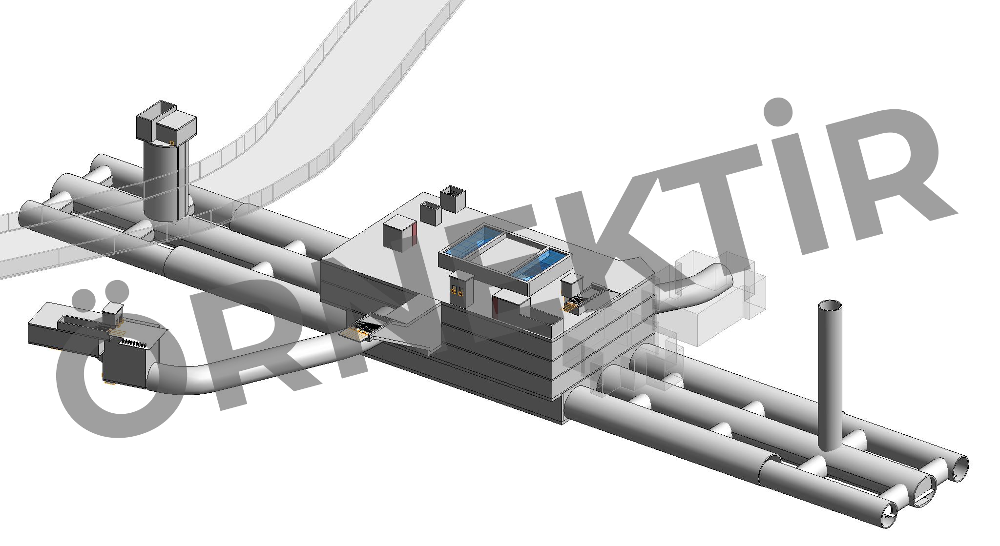

İstanbul'da İBB ve UAB tarafından işletilen, inşa edilen ve planlanan tüm raylı sistem hatlarının web arşivi
İşletmedeki Hatlar
M1 Yenikapı-Otogar-Atatürk Havalimanı-Kirazlı
M1 Metro Hattı, İstanbul'da hizmet veren tek hafif metro hattıdır. 1989 yılında hizmete açılmasıyla İstanbul ve Türkiye'nin ilk şehir içi raylı sistem hattı unvanına sahiptir.
M1 Metro Hattı, M1A ve M1B olarak ikiye ayrılmaktadır. Yenikapı - Otogar kesiminde ortak istasyonlardan ilerleyen hatlar Otogar İstasyonu’ndan sonra çatallanarak iki farklı hat olarak devam etmektedir. M1A güneye doğru ilerleyerek Davutpaşa, Zeytinburnu, Bakırköy, Bahçelievler, Yenibosna güzergahından geçip Atatürk Havalimanı’na ulaşmaktadır. M1B ise batıya doğru ilerleyerek Esenler, Üçyüzlü, Bağcılar güzergahından geçip Kirazlı’ya ulaşmaktadır.
Entegrasyonlar
12 aktarma istasyonuyla birlikte hattın mevcutta 6, planlanan veya inşaat aşamasındaki hatlarla birlikte ise toplamda 9 farklı hat ile entegrasyonu bulunmaktadır.
Yenikapı İstasyonu'nda M2 Yenikapı-Seyrantepe-Hacıosman Metro Hattı ve Marmaray hattı ile,
Aksaray İstasyonu'nda T1 Kabataş-Bağcılar Tramvay Hattı ile,
Topkapı-Ulubatlı İstasyonu'nda T4 Topkapı-Mescid-i Selam Tramvay Hattı ile,
Bayrampaşa-Maltepe İstasyonu'nda T5 Eminönü-Bayrampaşa-Alibeyköy Tramvay Hattı ile,
Otogar İstasyonu'nda HIZRAY hattı ile,
Merter İstasyonu'nda Metrobüs hattı ile,
Zeytinburnu İstasyonu'nda T1 Kabataş-Bağcılar Tramvay Hattı ve Metrobüs hattı ile,
Bahçelievler İstasyonu'nda Metrobüs hattı ile,
Ataköy-Şirinevler İstasyonu'nda Metrobüs hattı ile,
Yenibosna İstasyonu'nda M9 Ataköy-Olimpiyat Metro Hattı ve Metrobüs hattı ile,
Bağcılar Meydan İstasyonu'nda T1 Kabataş-Bağcılar Tramvay Hattı ile,
Kirazlı-Bağcılar İstasyonu'nda ise M3 Kayaşehir-Kirazlı Metro Hattı ve HIZRAY hattı ile entegrasyonu bulunmaktadır.
Hattın Uzunluğu
Yenikapı-Otogar kesimi 8,3 km,
Otogar-Atatürk Havalimanı kesimi 11,2 km,
Otogar-Kirazlı kesimi ise 7,3 km olmak üzere toplamda 26,8 kilometredir.
İstasyon Sayısı
Yenikapı-Otogar kesiminde 8 istasyon,
Otogar-Atatürk Havalimanı kesiminde 10 istasyon,
Otogar-Kirazlı kesiminde ise 5 istasyon olmak üzere toplamda 23 istasyondur.
Teknik Detaylar
Sefer Süresi: Yenikapı-Otogar-Atatürk Havalimanı kesimi 32dk, Yenikapı-Otogar-Kirazlı kesimi 22dk
Günlük Yolcu Sayısı: 370.000 (2023 yılı ortalaması)
Saatlik Tek Yöne Yolcu Kapasitesi: 34.000
Araç Markası: ABB
Araç Sayısı: 4 vagonlu setler halinde 105 vagon (Vagon başı 257 yolcu kapasitesi, 70 adeti sürücü kabinli)
Araç Boyutları: 23,2m uzunluk, 2,65m genişlik
Araç Numaralandırması: 5xx (Sürücü kabinli), 1xx
Maksimum hız: 100km/sa (İşletmede max. 80km/sa)
Peron Boyutları:
Elektrifikasyon: 750V DC havai katener (Esenler-Kirazlı kesimi rijit katener)
Sinyalizasyon: Bombardier Cityflo 250 (GoA1, ATP)
Kumanda Merkezi ve Depo: Esenler İstasyonu'nun yanı
İstasyon Yapıları
Yenikapı-Otogar kesiminde 4 aç-kapa ve 4 hemzemin istasyon,
Otogar-Kirazlı kesiminde ise 1 viyadük, 3 top-down ve 1 aç-kapa olmak üzere toplamda 4 viyadük, 8 hemzemin, 3 top-down ve 8 aç-kapa istasyon bulunmaktadır.
Tarihçe
22 Haziran 1986'da Vatan Caddesi'nde dönemin Cumhurbaşkanı Kenan Evren ve Başbakanı Turgut Özal'ın katılımıyla İBB tarafından temeli atılmıştır.
11 Mart 1989'da hattın ilk kesimi olan Emniyet - Kocatepe arası hizmete alınmıştır.
3 Eylül 1989'da Aksaray - Emniyet kesimi,
24 Aralık 1989'da Esenler - Kocatepe kesimi,
31 Ocak 1994'te Zeytinburnu - Kocatepe kesimi,
7 Mart 1994'te Bakırköy/İncirli - Zeytinburnu kesimi,
25 Ağustos 1995'te Yenibosna - Bakırköy/İncirli kesimi,
15 Ocak 1999'da Bahçelievler İstasyonu,
20 Aralık 2002'de Atatürk Havalimanı - Yenibosna kesimi,
22 Şubat 2012'de yenilenmiş Esenler İstasyonu,
14 Haziran 2013'te Kirazlı - Esenler kesimi,
9 Kasım 2014'te Yenikapı - Aksaray kesimi,
15 Aralık 2022'de yenilenmiş Yenibosna İstasyonu hizmete alınmıştır.
M2 Yenikapı-Seyrantepe-Hacıosman
M2 Metro Hattı, İstanbul'da hizmet veren ilk ağır metro hattıdır. İlk etabına 1992 yılında başlanıp 8 yıllık bir sürenin ardından 2000 yılında açılmıştır.
M2 Metro Hattı, kuzey-güney ekseninde olup Yenikapı - Hacıosman olarak hizmet vermektedir. Yenikapı'dan başlayan hat Vezneciler, Haliç, Şişhane, Taksim, Mecidiyeköy, Levent, Maslak gibi yoğun ve turistik bölgelerden geçerek Hacıosman'da son bulmaktadır. Ayrıca Seyrantepe İstasyonu ile Sanayi Mahallesi İstasyonu arasında mekik işletme yapılmaktadır.
Entegrasyonlar
11 aktarma istasyonuyla birlikte hattın mevcutta 11, planlanan veya inşaat aşamasındaki hatlarla birlikte ise toplamda 16 farklı hat ile entegrasyonu bulunmaktadır.
Yenikapı İstasyonu'nda M1 Yenikapı-Atatürk Havalimanı-Kirazlı Metro Hattı ve Marmaray hattı ile,
Vezneciler İstasyonu'nda T1 Kabataş-Bağcılar Tramvay Hattı ve Vezneciler-Fenertepe Metro Hattı ile,
Haliç İstasyonu'nda T5 Eminönü-Alibeyköy Tramvay Hattı ile,
Şişhane İstasyonu'nda F2 Karaköy-Beyoğlu Füniküler Hattı ve T2 Taksim-Tünel Nostaljik Tramvay Hattı ile,
Taksim İstasyonu'nda F1 Taksim-Kabataş Füniküler Hattı, T2 Taksim-Tünel Tramvay Hattı ve Taksim-Okmeydanı Metro Hattı ile,
Şişli-Mecidiyeköy İstasyonu'nda M7 Yıldız-Mahmutbey Metro Hattı ve Metrobüs hattı ile,
Gayrettepe İstasyonu'nda M11 Gayrettepe-İstanbul Havalimanı Metro Hattı ve Metrobüs hattı ile,
Levent İstasyonu'nda M6 Levent-Boğaziçi Üniversitesi/Hisarüstü Metro Hattı ile,
4. Levent İstasyonu'nda HIZRAY hattı ile,
Seyrantepe İstasyonu'nda F3 Seyrantepe-Vadistanbul Füniküler Hattı ile,
İTÜ-Ayazağa İstasyonu'nda İTÜ-Kağıthane Metro Hattı ve İTÜ-İstinye Füniküler Hattı ile entegrasyonu bulunmaktadır.
Hattın Uzunluğu
Yenikapı-Hacıosman kesimi 21,7 km,
Sanayi Mahallesi-Seyrantepe kesimi ise 1,8 km olmak üzere toplamda 23,49 kilometredir.
İstasyon Sayısı
Yenikapı-Hacıosman kesiminde 15 istasyon
ve Seyrantepe İstasyonu olmak üzere toplamda 16 istasyondur.
Teknik Detaylar
Sefer Süresi: Yenikapı-Hacıosman kesimi 32dk, Sanayi Mahallesi-Seyrantepe kesimi 3dk
Günlük Yolcu Sayısı: 420.000 (2023 yılı ortalaması)
Saatlik Tek Yöne Yolcu Kapasitesi: 70.000
Araç Markası: Hyundai Rotem
Araç Sayısı: 4 vagonlu setler halinde 160 vagon (Vagon başı 238 yolcu kapasitesi, 92 vagon 2008 model, 68 vagon 2017 model)
Araç Boyutları: 21,55m uzunluk (2017 modelde 21,57m), 3,05m genişlik
Kumanda Merkezi ve Depo: Seyrantepe İstasyonu'nun yanı
İstasyon Yapıları
11 tünel, 5 aç-kapa ve 1 adet köprü istasyon bulunmaktadır.
Tarihçe
12 Eylül 1992'de Taksim'de İBB tarafından temeli atılmıştır.
16 Eylül 2000'de hattın ilk kesimi olan Taksim - Levent arası hizmete alınmıştır.
31 Ekim 2000'de Levent - 4. Levent kesimi,
30 Ocak 2009'da Şişhane - Taksim kesimi,
30 Ocak 2009'da 4. Levent - Atatürk Oto Sanayi kesimi,
2 Eylül 2010'da Atatürk Oto Sanayi - Darüşşafaka kesimi,
11 Kasım 2010'da Sanayi Mahallesi - Seyrantepe kesimi,
9 Temmuz 2011'de Darüşşafaka - Hacıosman kesimi,
15 Şubat 2014'te Yenikapı - Şişhane kesimi,
16 Mart 2014'te Vezneciler-İstanbul Üniversitesi İstasyonu hizmete alınmıştır.
M3 Bakırköy Sahil-Kayaşehir Merkez
M3 Metro Hattı, İstanbul'un Avrupa Yakası'nda hizmet veren bir metro hattıdır. İlk etabına 2006 yılında başlanıp 7 yıllık bir sürenin ardından 2013 yılında açılmıştır.
M3 Metro Hattı, kuzey-güney ekseninde olup Bakırköy Sahil - Kayaşehir Merkez olarak hizmet vermektedir. Bakırköy Sahil'den başlayan hat Özgürlük Meydanı, İncirli, Yıldıztepe, Mahmutbey, İSTOÇ, İkitelli Sanayi, Metrokent, Çam ve Sakura Şehir Hastanesi gibi sanayi ve konut bölgelerinden geçerek Kayaşehir'de son bulmaktadır.
Entegrasyonlar
6 aktarma istasyonuyla birlikte hattın mevcutta 6, planlanan veya inşaat aşamasındaki hatlarla birlikte ise toplamda 8 farklı hat ile entegrasyonu bulunmaktadır.
Özgürlük Meydanı İstasyonu'nda Marmaray hattı ile,
Bakırköy-İncirli İstasyonu'nda M1A Yenikapı-Atatürk Havalimanı Metro Hattı ve Metrobüs hattı ile,
Kirazlı İstasyonu'nda M1B Yenikapı-Kirazlı Metro Hattı ve HIZRAY hattı ile,
Mahmutbey İstasyonu'nda M7 Yıldız-Mahmutbey Metro Hattı ile,
İkitelli Sanayi İstasyonu'nda M9 Olimpiyat-Bahariye Metro Hattı ile,
Kayaşehir Merkez İstasyonu'nda M11 Gayrettepe-İstanbul Havalimanı Metro Hattı ile entegrasyonu bulunmaktadır.
Hattın Uzunluğu
Bakırköy-Kayaşehir kesimi toplamda 26,7 kilometredir.
İstasyon Sayısı
Bakırköy-Kayaşehir kesimi Yıldıztepe İstasyonu hariç toplamda 19 istasyondur.
Teknik Detaylar
Sefer Süresi: 43,5dk
Günlük Yolcu Sayısı: 74.000 (Kayaşehir-Kirazlı kesimi, 2023 yılı ortalaması)
Saatlik Tek Yöne Yolcu Kapasitesi: 70.000
Araç Markası: Alstom
Araç Sayısı: 4 vagonlu setler halinde 80 vagon (Vagon başı 241 yolcu kapasitesi, 2009 model)
Kumanda Merkezi ve Depo: M9 Olimpiyat İstasyonu'nun yanı
İstasyon Yapıları
6 tünel, 2 top-down, 12 aç-kapa istasyon bulunmaktadır.
Tarihçe
2006 yılında İBB tarafından temeli atılmıştır.
14 Haziran 2013'te hattın ilk kesimi olan Kirazlı - Başakşehir arası hizmete alınmıştır.
22 Kasım 2013'te Olimpiyat - İkitelli Sanayi kesimi,
8 Nisan 2023'te Başakşehir - Kayaşehir kesimi,
10 Mart 2024'te Bakırköy Sahil - Kirazlı kesimi hizmete alınmıştır.
M4 Kadıköy-Sabiha Gökçen Havalimanı
M4 Metro Hattı, İstanbul'un Anadolu Yakası'nda hizmet veren ilk metro hattıdır. İlk etabına 2008 yılında başlanıp 4 yıllık bir sürenin ardından 2012 yılında açılmıştır.
M4 Metro Hattı; doğu-bakı ekseninde ve çoğunlukla D-100 Karayolu'nun altında olup Kadıköy - Sabiha Gökçen Havalimanı olarak hizmet vermektedir. Kadıköy'den başlayan hat Göztepe, Koztayağı, Bostancı, Maltepe, Kartal, Pendik gibi yoğun konut ve iş bölgelerden geçerek Sabiha Gökçen Havalimanı'nda son bulmaktadır.
Entegrasyonlar
6 aktarma istasyonuyla birlikte hattın mevcutta 4, planlanan veya inşaat aşamasındaki hatlarla birlikte ise toplamda 8 farklı hat ile entegrasyonu bulunmaktadır.
Kadıköy İstasyonu'nda T3 Kadıköy-Moda Tramvay Hattı ve Üsküdar-Maltepe Tramvay Hattı ile,
Ayrılık Çeşmesi İstasyonu'nda Marmaray hattı ile,
Ünalan İstasyonu'nda Metrobüs hattı ile,
Göztepe İstasyonu'nda M13 Yenidoğan-Söğütlüçeşme Metro Hattı ile,
Yenisahra İstasyonu'nda M12 Ümraniye-Ataşehir-Göztepe Metro Hattı ile,
Kozyatağı İstasyonu'nda M8 Bostancı-Parseller Metro Hattı ile,
Sabiha Gökçen Havalimanı İstasyonu'nda HIZRAY hattı ile entegrasyonu bulunmaktadır.
Hattın Uzunluğu
Kadıköy-Sabiha Gökçen Havalimanı kesimi toplamda 33,5 kilometredir.
İstasyon Sayısı
Kadıköy-Sabiha Gökçen Havalimanı kesimi toplamda 23 istasyondur.
Teknik Detaylar
Sefer Süresi: 52dk
Günlük Yolcu Sayısı: 270.000 (2023 yılı ortalaması)
Saatlik Tek Yöne Yolcu Kapasitesi: 70.000
Araç Markası: CAF
Araç Sayısı: 4 vagonlu setler halinde 144 vagon
Araç Boyutları: 22,43m uzunluk, 3,01m genişlik
Araç Numaralandırması:
Maksimum hız: 100km/sa (İşletmede max. 80km/sa)
Peron Boyutları: 180m
Elektrifikasyon: 1500V DC rijit katener
Sinyalizasyon: Thales SelTrac (GoA2, ATO, ATP)
Kumanda Merkezi ve Depo: Kumanda merkezi Esenkent İstasyonu'nda, depo ise Maltepe İstasyonu'nun yanında ve yer altındadır.
İstasyon Yapıları
22 adet tünel ve 1 adet aç-kapa istasyon bulunmaktadır.
Tarihçe
29 Ocak 2005'te Kadıköy'de dönemin Başbakanı Recep Tayyip Erdoğan'ın katılımıyla İBB tarafından temeli atılmıştır.
17 Ağustos 2012'de hattın ilk kesimi olan Kadıköy - Kartal arası hizmete alınmıştır.
29 Ekim 2013'te Ayrılık Çeşmesi İstasyonu,
10 Ekim 2016'da Kartal-Tavşantepe kesimi,
2 Ekim 2022'de Tavşantepe-Sabiha Gökçen Havalimanı kesimi hizmete alınmıştır.
M5 Üsküdar-Samandıra Merkez
M5 Metro Hattı, İstanbul'un Anadolu Yakası'nda hizmet veren ikinci metro hattıdır. 2017 yılında hizmete açılan hat, İstanbul ve Türkiye'nin ilk sürücüsüz metrosudur. İlk etabına 2012 yılında başlanıp 5 yıllık bir sürenin ardından 2017 yılında açılmıştır.
M5 Metro Hattı, doğu-batı ekseninde olup Üsküdar - Samandıra Merkez olarak hizmet vermektedir. Üsküdar'dan başlayan hat Altunizade, Ümraniye, Dudullu, Çekmeköy, Sancaktepe gibi yoğun konut bölgelerinden geçerek Samandıra'da son bulmaktadır.
Hattın Üsküdar-Çekmeköy kesiminde yarım boy PAKS, Çekmeköy-Samandıra kesiminde tam boy PAKS kullanılmıştır.
Entegrasyonlar
7 aktarma istasyonuyla birlikte hattın mevcutta 3, planlanan veya inşaat aşamasındaki hatlarla birlikte ise toplamda 10 farklı hat ile entegrasyonu bulunmaktadır.
Üsküdar İstasyonu'nda Üsküdar-Harem Tramvay Hattı, Üsküdar-Maltepe Tramvay Hattı ve Marmaray hattı ile,
Altunizade İstasyonu'nda M14 Altunizade-Bosna Bulvarı Metro Hattı ve Metrobüs hattı ile,
Ümraniye İstasyonu'nda HIZRAY hattı ile,
Çarşı İstasyonu'nda M12 Ümraniye-Ataşehir-Göztepe Metro Hattı ile,
Dudullu İstasyonu'nda M8 Bostancı-Parseller Metro Hattı ile,
Sarıgazi İstasyonu'nda M13 Yenidoğan-Söğütlüçeşme Metro Hattı ile,
Sancaktepe İstasyonu'nda HIZRAY hattı ile entegrasyonu bulunmaktadır.
Hattın Uzunluğu
Üsküdar-Çekmeköy kesimi 20 km,
Çekmeköy-Samandıra kesimi ise 6,5 km olmak üzere toplamda 26,5 kilometredir.
İstasyon Sayısı
Üsküdar-Çekmeköy kesimi 16 istasyon,
Çekmeköy-Samandıra kesiminde ise Çekmeköy ve Sancaktepe Şehir Hastanesi İstasyonu hariç 4 istasyon olmak üzere toplamda 20 istasyondur.
Teknik Detaylar
Sefer Süresi: 43dk
Günlük Yolcu Sayısı: 240.000 (Üsküdar-Çekmeköy kesimi, 2023 yılı ortalaması)
Saatlik Tek Yöne Yolcu Kapasitesi: 65.000
Araç Markası: CAF-Mitsubishi
Araç Sayısı: 6 vagonlu setler halinde 126+24 vagon (ÇSS kapsamında 24 vagon ilave edilmiştir.)
Araç Numaralandırması:
Maksimum hız: 100km/sa (İşletmede max. 80km/sa)
Peron Boyutları: 140m
Elektrifikasyon: 1500V DC rijit katener
Sinyalizasyon: Bombardier Cityflo 650 (GoA4, UTO)
Kumanda Merkezi ve Depo: Kumanda merkezi Çarşı İstasyonu'nda, depo ise M8 Parseller İstasyonu'nun yanındadır.
İstasyon Yapıları
8 tünel, 6 top-down ve 6 aç-kapa istasyon bulunmaktadır.
Tarihçe
6 Haziran 2012'de Çekmeköy'de dönemin Ulaştırma Bakanı Binali Yıldırım'ın katılımıyla İBB tarafından temeli atılmıştır.
15 Aralık 2017'de hattın ilk kesimi olan Üsküdar - Yamanevler arası hizmete alınmıştır.
21 Ekim 2018'de Yamanevler - Çekmeköy kesimi hizmete alınmıştır.
16 Mart 2024'te Çekmeköy - Samandıra kesimi hizmete alınmıştır.
M6 Levent-Boğaziçi Üniversitesi/Hisarüstü
M6 Metro Hattı, İstanbul'un Avrupa Yakası'nda hizmet veren bir metro hattıdır. 2015 yılında hizmete alınmasıyla İstanbul'da Ulaştırma ve Altyapı Bakanlığı tarafından yapılan ilk metro ve İstanbul'daki en kısa metro ünvanlarına sahiptir. Hatta 2013 yılında başlanıp 2 yıllık bir sürenin ardından 2015 yılında açılmıştır.
M6 Metro Hattı, Levent - Boğaziçi Üniversitesi olarak hizmet vermektedir. Levent'ten başlayan hat Etiler'den geçerek Hisarüstü'nde son bulmaktadır.
Hat, M2 ile aynı teknik özelliklere sahip olup hatta kullanılan araçlar eskiden M2'de kullanılmış olan araçlardır. Hatta istasyonlar arasında tek ray hattı bulunmaktadır ve hem kapasitesi hem geçtiği bölgeler hem de teknik özelliklerinden dolayı "butik metro" olarak adlandırılmakta ve M2'nin bir uzantısı olarak da görülmektedir.
Entegrasyonlar
2 aktarma istasyonuyla birlikte hattın toplamda 2 farklı hat ile entegrasyonu bulunmaktadır.
Levent İstasyonu'nda M2 Yenikapı-Seyrantepe-Hacıosman Metro Hattı ile,
Boğaziçi Üniversitesi-Hisarüstü İstasyonu'nda F4 Rumeli Hisarüstü-Aşiyan Füniküler Hattı ile,
Hattın Uzunluğu
Levent-Hisarüstü kesimi toplamda 3,3 kilometredir.
İstasyon Sayısı
Levent-Hisarüstü kesimi toplamda 4 istasyondur.
Teknik Detaylar
Sefer Süresi: 7dk
Günlük Yolcu Sayısı: 16.000 (2023 yılı ortalaması)
Kumanda Merkezi ve Depo: Seyrantepe İstasyonu'nun yanı
İstasyon Yapıları
4 tünel tipi istasyon bulunmaktadır.
Tarihçe
3 Ocak 2013'te temeli atılmıştır.
19 Nisan 2015'te Levent - Hisarüstü arası hizmete alınmıştır.
M7 Yıldız-Mahmutbey
M7 Metro Hattı, İstanbul'un Avrupa Yakası'nda hizmet veren tek sürücüsüz metro hattıdır. İlk etabına 2014 yılında başlanıp 6 yıllık bir sürenin ardından 2020 yılında açılmıştır.
M7 Metro Hattı, doğu-batı ekseninde olup Mecidiyeköy - Mahmutbey olarak hizmet vermektedir. Mecidiyeköy'den başlayan hat Çağlayan, Kağıthane, Alibeyköy, Göztepe gibi yoğun konut bölgelerinden geçerek Mahmutbey'de son bulmaktadır. Ayrıca Mecidiyeköy İstasyonu, Fulya İstayonu ve Yıldız İstasyonu arasında mekik işletme yapılmaktadır.
Hat, 71 metre derinliği ile (Yıldız İstasyonu) İstanbul ve Türkiye'deki en derin metro istasyonuna sahiptir.
Entegrasyonlar
7 aktarma istasyonuyla birlikte hattın mevcutta 6, planlanan veya inşaat aşamasındaki hatlarla birlikte ise toplamda 10 farklı hat ile entegrasyonu bulunmaktadır.
Yıldız İstasyonu'nda Yıldız-Ortaköy Füniküler Hattı ile,
Mecidiyeköy İstasyonu'nda M2 Yenikapı-Hacıosman Metro Hattı ve Metrobüs hattı ile,
Kağıthane İstasyonu'nda M11 Gayrettepe-İstanbul Havalimanı Metro Hattı, İTÜ-Kağıthane Metro Hattı ve HIZRAY hattı ile,
Alibeyköy İstasyonu'nda T5 Eminönü-Alibeyköy Tramvay Hattı ile,
Yenimahalle İstasyonu'nda Vezneciler-Fenertepe Metro Hattı ile,
Karadeniz Mahallesi İstasyonu'nda T4 Topkapı-Mescid-i Selam Tramvay Hattı ile,
Mahmutbey İstasyonu'nda ise M3 Kayaşehir-Kirazlı Metro Hattı ile entegrasyonu bulunmaktadır.
Hattın Uzunluğu
Mecidiyeköy-Mahmutbey kesimi 18 km,
Yıldız-Mecidiyeköy kesimi ise 2 km olmak üzere toplamda 20 kilometredir.
İstasyon Sayısı
Mecidiyeköy-Mahmutbey kesiminde 15 istasyon
ve Fulya ile Yıldız İstasyonu olmak üzere toplamda 17 istasyondur.
Teknik Detaylar
Sefer Süresi: Mecidiyeköy-Mahmutbey kesimi 30dk, Yıldız-Mecidiyeköy kesimi 4dk
Günlük Yolcu Sayısı: 200.000 (2023 yılı ortalaması)
Saatlik Tek Yöne Yolcu Kapasitesi: 70.000
Araç Markası: Hyundai Rotem
Araç Sayısı: 4 vagonlu setler halinde 80 vagon
Araç Numaralandırması:
Maksimum hız: 100km/sa (İşletmede max. 80km/sa)
Peron Boyutları: 180m
Elektrifikasyon: 1500V DC rijit katener
Sinyalizasyon: Bombardier Cityflo 650 (GoA4, UTO)
Kumanda Merkezi ve Depo: Tekstilkent İstasyonu'nun yanı
İstasyon Yapıları
10 tünel, 3 top-down, 2 aç-kapa ve 2 adet viyadük istasyon bulunmaktadır.
Tarihçe
9 Şubat 2014'te Alibeyköy'de dönemin Başbakanı Recep Tayyip Erdoğan'ın katılımıyla İBB tarafından temeli atılmıştır.
28 Ekim 2020'de hattın ilk kesimi olan Mecidiyeköy - Mahmutbey arası hizmete alınmıştır.
20 Aralık 2021'de (tekrardan) Mecidiyeköy İstasyonu,
2 Ocak 2023'te Yıldız-Mecidiyeköy kesimi hizmete alınmıştır.
M8 Bostancı-Parseller
M8 Metro Hattı, İstanbul'un Anadolu Yakası'nda hizmet veren sürücüsüz bir metro hattıdır. Hatta 2016 yılında başlanıp 7 yıllık bir sürenin ardından 2023 yılında açılmıştır.
M8 Metro Hattı, Anadolu Yakası'nda kuzey-güney eksenindeki tek metro olup Bostancı - Parseller olarak hizmet vermektedir. Bostancı'dan başlayan hat Koztayağı, Kayışdağı, İMES, Dudullu gibi yoğun konut ve sanayi bölgelerinden geçerek Parseller'de son bulmaktadır.
Entegrasyonlar
7 aktarma istasyonuyla birlikte hattın mevcutta 3, planlanan veya inşaat aşamasındaki hatlarla birlikte ise toplamda 6 farklı hat ile entegrasyonu bulunmaktadır.
Bostancı İstasyonu'nda Marmaray hattı ile,
Emin Ali Paşa İstasyonu'nda Üsküdar-Maltepe Tramvay Hattı ile,
Ayşekadın İstasyonu'nda Üsküdar-Maltepe Tramvay Hattı ile,
Kozyatağı İstasyonu'nda M4 Kadıköy-Sabiha Gökçen Havalimanı Metro Hattı ile,
Mevlana İstasyonu'nda HIZRAY hattı ile,
İMES İstasyonu'nda M13 Yenidoğan-Söğütlüçeşme Metro Hattı ile,
Dudullu İstasyonu'nda M5 Üsküdar-Çekmeköy Metro Hattı ile,
Hattın Uzunluğu
Bostancı-Parseller kesimi toplamda 14,27 kilometredir.
İstasyon Sayısı
Bostancı-Parseller kesimi toplamda 13 istasyondur.
Teknik Detaylar
Sefer Süresi: 25dk
Günlük Yolcu Sayısı: 43.000 (2023 yılı ortalaması)
Saatlik Tek Yöne Yolcu Kapasitesi: 70.000
Araç Markası: Hyundai Rotem
Araç Sayısı: 4 vagonlu setler halinde 40 vagon
Araç Numaralandırması:
Maksimum hız: 100km/sa (İşletmede max. 80km/sa)
Peron Boyutları: 90m
Elektrifikasyon: 1500V DC rijit katener
Sinyalizasyon: Bombardier Cityflo 650 (GoA4, UTO)
Kumanda Merkezi ve Depo: Parseller İstasyonu'nun yanı
İstasyon Yapıları
6 tünel, 3 top-down ve 4 aç-kapa istasyon bulunmaktadır.
Tarihçe
Şubat 2016'da İBB tarafından temeli atılmıştır.
6 Ocak 2023'te Bostancı - Parseller kesimi hizmete alınmıştır.
M9 Ataköy-Olimpiyat
M9 Metro Hattı, İstanbul'un Avrupa Yakası'nda hizmet veren bir metro hattıdır. İlk etabına 2006 yılında başlanıp 7 yıllık bir sürenin ardından M3 hattı kapsamında 2013 yılında açılmıştır.
M9 Metro Hattı, Ataköy - Olimpiyat olarak hizmet vermektedir. Ataköy'den başlayan hat Yenibosna, Çobançeşme, Mimar Sinan, Atatürk Mahallesi, İkitelli Sanayi gibi yoğun sanayi ve konut bölgelerinden geçerek Olimpiyat'ta son bulmaktadır.
Hat, M3 ile aynı teknik özelliklere sahip olup ilk etabı olan Olimpiyat-İkitelli Sanayi kesimi M3 kapsamında inşa edilip hizmete açılmıştır. Ayrıca hatta M3 hattı ile ortak araçlar kullanımaktadır.
Entegrasyonlar
6 aktarma istasyonuyla birlikte hattın mevcutta 3, planlanan veya inşaat aşamasındaki hatlarla birlikte ise toplamda 6 farklı hat ile entegrasyonu bulunmaktadır.
Olimpiyat İstasyonu'nda M11 Gayrettepe-İstanbul Havalimanı-Halkalı Metro Hattı ile,
İkitelli Sanayi İstasyonu'nda ise M3 Kayaşehir-Kirazlı Metro Hattı ile entegrasyonu bulunmaktadır.
Atatürk Mahallesi İstasyonu'nda M7 Yıldız-Mahmutbey Metro Hattı ile,
Mimar Sinan İstasyonu'nda M1B Yenikapı-Otogar-Halkalı Metro Hattı ile,
Yenibosna İstasyonu'nda M1A Yenikapı-Otogar-Atatürk Havalimanı Metro Hattı ile,
Ataköy İstasyonu'nda Marmaray hattı ile entegrasyonu bulunmaktadır.
Hattın Uzunluğu
Olimpiyat-Bahariye kesimi toplamda 5,9 kilometredir.
Bahariye-Ataköy kesimi ise 11,3 km olmak üzere toplamda 17,2 kilometredir.
İstasyon Sayısı
Olimpiyat-Bahariye kesimi toplamda 5 istasyondur.
Bahariye-Ataköy kesiminde ise Bahariye ve Mimar Sinan İstasyonu hariç 8 istasyon olmak üzere toplamda 13 istasyondur.
Teknik Detaylar
Sefer Süresi: 26dk
Günlük Yolcu Sayısı: 17.000 (Olimpiyat-Bahariye kesimi, 2023 yılı ortalaması)
Saatlik Tek Yöne Yolcu Kapasitesi: 35.000
Araç Markası: Alstom
Araç Sayısı: 4 vagonlu setler halinde 80 vagon (M3 ile ortak)
Araç Numaralandırması:
Maksimum hız: 100km/sa (İşletmede max. 80km/sa)
Peron Boyutları: Olimpiyat-İkitelli Sanayi kesimi 180m, İkitelli Sanayi-Ataköy kesimi 90m
M11 Metro Hattı, İstanbul'un Avrupa Yakası'nda hizmet veren sürücüsüz bir metro hattıdır. 2023 yılında hizmete açılan hat, İstanbul ve Türkiye'nin en hızlı, en uzun ve ilk ekspres metrosudur. Aynı zamanda Ulaştırma ve Altyapı Bakanlığı tarafından işletilen ilk metro ve yerli sinyalizasyon sistemi kullanan ilk metro hattı gibi ünvanlara da sahiptir. İlk etabına 2016 yılında başlanıp 7 yıllık bir sürenin ardından 2023 yılında açılmıştır.
M11 Metro Hattı, kuzey-güney ekseninde olup Gayrettepe - Arnavutköy Hastane olarak hizmet vermektedir. Gayrettepe'dan başlayan hat Kağıthane, Kemerburgaz, Göktürk, İstanbul Havalimanı gibi yerlerden geçerek Arnavutköy'de son bulmaktadır.
Entegrasyonlar
2 aktarma istasyonuyla birlikte hattın mevcutta 3, planlanan veya inşaat aşamasındaki hatlarla birlikte ise toplamda 5 farklı hat ile entegrasyonu bulunmaktadır.
Gayrettepe İstasyonu'nda M2 Yenikapı-Hacıosman Metro Hattı ve Metrobüs hattı ile,
Kağıthane İstasyonu'nda M7 Yıldız-Mahmutbey Metro Hattı, İTÜ-Kağıthane Metro Hattı ve HIZRAY hattı ile,
Hattın Uzunluğu
Gayrettepe-Arnavutköy kesimi toplamda 51,5 kilometredir.
İstasyon Sayısı
Gayrettepe-Arnavuköy kesimi 1'i kullanım dışı olmak üzere toplamda 11 istasyondur.
Teknik Detaylar
Sefer Süresi: 40dk
Günlük Yolcu Sayısı: 13.000 (Kağıthane-Kargo Terminali kesimi, 2023 yılı ortalaması)
Saatlik Tek Yöne Yolcu Kapasitesi: 40.000 (Gayrettepe-İstanbul Havalimanı kesimi), 36.000 (Arnavutköy-İstanbul Havalimanı kesimi)
Araç Markası: CRRC
Araç Sayısı: 4 vagonlu setler halinde 40 vagon
Araç Numaralandırması:
Maksimum hız: 132km/sa (İşletmede max. 120km/sa)
Peron Boyutları: 180m
Elektrifikasyon: 1500V DC rijit katener
Sinyalizasyon: Aselsan Cobalt (GoA4, UTO)
Kumanda Merkezi ve Depo: Ana kumanda merkezi İstanbul Havalimanı İstasyonu'nda, yedek kumanda merkezi ve depo ise Kargo Terminali ile Taşoluk İstasyonu'nun arasındadır.
İstasyon Yapıları
3 tünel ve 8 aç-kapa istasyon bulunmaktadır.
Tarihçe
2016'da temeli atılmıştır.
22 Ocak 2023'te hattın ilk kesimi olan Kağıthane - Kargo Terminali arası hizmete alınmıştır.
29 Ocak 2024'te Gayrettepe - Kağıthane kesimi hizmete alınmıştır.
19 Mart 2024'te ise Arnavutköy - Kargo Terminali kesimi hizmete alınmıştır.
T1 Kabataş-Bağcılar
T1 Tramvay Hattı, İstanbul'un Avrupa Yakası'nda hizmet veren bir tramvay hattıdır. 1992 yılında hizmete açılmasıyla İstanbul'daki ilk modern tramvay hattıdır. Aynı zamanda Dünya'nın en çok kullanılan tramvay hattı ünvanına sahiptir.
T1 Tramvay Hattı, Kabataş - Bağcılar olarak hizmet vermektedir. Kabataş'tan başlayan hat Karaköy, Eminönü, Sirkeci, Beyazıt, Aksaray, Topkapı, Cevizlibağ, Zeytinburnu, Güngören gibi yoğun ve turistik bölgelerden geçerek Bağcılar'da son bulmaktadır.
Hatta ilk seferi 7 Kasım 2023 tarihinde yapılan ve kruvaziyer turistlerine özel olan Galataport-Beyazıt Turistik Tramvay Hattı olarak adlandırılan özel seferler bulunmaktadır.
Entegrasyonlar
10 aktarma istasyonuyla birlikte hattın mevcutta 9, planlanan veya inşaat aşamasındaki hatlarla birlikte ise toplamda 11 farklı hat ile entegrasyonu bulunmaktadır.
Kabataş İstasyonu'nda M7 Yıldız-Mahmutbey Metro Hattı veF1 Taksim-Kabataş Füniküler Hattı ile,
Karaköy İstasyonu'nda F2 Karaköy-Beyoğlu Füniküler Hattı ile,
Eminönü İstasyonu'nda T5 Eminönü-Alibeyköy Tramvay Hattı ile,
Sirkeci İstasyonu'nda Marmaray hattı ile,
Laleli-İstanbul Üniversitesi İstasyonu'nda M2 Yenikapı-Hacıosman Metro Hattı ile,
Yusufpaşa İstasyonu'nda M1 Yenikapı-Atatürk Havalimanı-Kirazlı Metro Hattı ile,
Topkapı İstasyonu'nda T4 Topkapı-Mescid-i Selam Tramvay Hattı ile,
Cevizlibağ-AÖY İstasyonu'nda Metrobüs hattı ile,
Zeytinburnu İstasyonu'nda M1 Yenikapı-Otogar-Atatürk Havalimanı Metro Hattı ve Metrobüs hattı ile,
Bağcılar İstasyonu'nda M1 Yenikapı-Otogar-Kirazlı Metro Hattı ile entegrasyonu bulunmaktadır.
Hattın Uzunluğu
Kabataş-Bağcılar kesimi toplamda 19,3 kilometredir.
İstasyon Sayısı
Kabataş-Bağcılar kesiminde toplamda 31 istasyondur.
Teknik Detaylar
Sefer Süresi: 65dk
Günlük Yolcu Sayısı: 360.000 (2023 yılı ortalaması)
Saatlik Tek Yöne Yolcu Kapasitesi: 15.000
Araç Markası: Alstom Citadis 304, Bombardier Flexity Swift A32
Araç Sayısı: 2 vagonlu setler halinde 92 vagon (37 adet Alstom, 55 adet Bombardier)
Araç Numaralandırması:
Maksimum hız: 100km/sa (İşletmede max. 70km/sa)
Peron Boyutları: 60m
Elektrifikasyon: 750V DC havai katener
Sinyalizasyon: -
Kumanda Merkezi ve Depo: Zeytinburnu İstasyonu'nun yanı
İstasyon Yapıları
30 hemzemin ve 1 adet battıçıktı istasyon bulunmaktadır.
Tarihçe
9 Mayıs 1991'de Aksaray'da İBB tarafından temeli atılmıştır.
13 Haziran 1992'de hattın ilk kesimi olan Aksaray - Beyazıt arası hizmete alınmıştır.
10 Temmuz 1992'de Sirkeci - Beyazıt kesimi,
29 Aralık 1992'de Topkapı - Aksaray kesimi,
10 Mart 1994'te Zeytinburnu - Topkapı kesimi,
20 Nisan 1996'da Sirkeci - Eminönü kesimi,
30 Ocak 2005'te Eminönü - Fındıklı kesimi,
29 Haziran 2006'da Fındıklı - Kabataş kesimi,
14 Eylül 2006'da (T2 hattı olarak) Zeytinburnu - Bağcılar kesimi hizmete alınmıştır.
3 Şubat 2011'de T1 ve T2 hattı birleştirilmiştir.
T2 Taksim-Tünel
T2 Nostaljik Tramvay Hattı, İstanbul'un Avrupa Yakası'nda hizmet veren bir tramvay hattıdır. 1990 yılında hizmete açılmasıyla İstanbul'daki ilk tramvay hattıdır.
T2 Nostaljik Tramvay Hattı, Taksim - Tünel olarak hizmet vermektedir. Taksim'den başlayan hat İstiklal Caddesi'ni takip ederek Hüseyin Ağa Camii, Galatasaray Lisesi gibi turistik bölgelerden geçerek Tünel'de son bulmaktadır.
Hattın güzergahı eskiden hizmet vermekte olan tramvay hattı gibi olması ve nostaljik araçları sebebiyle "Nostaljik Tramvay" olarak bahsedilmektedir. Ayrıca hatta kullanılan araçlar eskiden İstanbul'da kullanılmış olan orijinal araçlardır.
Entegrasyonlar
2 aktarma istasyonuyla birlikte hattın mevcutta 3, planlanan hatlarla birlikte ise toplamda 4 farklı hat ile entegrasyonu bulunmaktadır.
Taksim İstasyonu'nda M2 Yenikapı-Seyrantepe-Hacıosman Metro Hattı, F1 Taksim-Kabataş Füniküler Hattı ve Taksim-Okmeydanı Metro Hattı ile,
Şişhane İstasyonu'nda M2 Yenikapı-Seyrantepe-Hacıosman Metro Hattı ve F2 Karaköy-Beyoğlu Füniküler Hattı ile,
Teknik Detaylar
Hat Uzunluğu: 1,64km
İstasyon Sayısı: 5 adet
Sefer Süresi: 15dk
Günlük Yolcu Sayısı: 1.500 (2024)
Saatlik Tek Yöne Yolcu Kapasitesi:
Araç Markası: Franco-Belge
Araç Sayısı: 3 adet motris (çekici) ve 2 adet vagon
Maksimum hız: 50km/sa (İşletmede max. 20km/sa)
Elektrifikasyon: 600V DC havai katener
Depo: Taksim İstasyonu'nun yanı
İstasyon Yapıları
5 adet hemzemin istasyon bulunmaktadır.
Tarihçe
29 Aralık 1990'te hat hizmete alınmıştır.
T3 Kadıköy-Moda
T3 Nostaljik Tramvay Hattı, İstanbul'un Anadolu Yakası'nda hizmet veren bir tramvay hattıdır. 2003 yılında hizmete açılmasıyla İstanbul ve Türkiye'deki ilk ring raylı sistem hattıdır.
T3 Nostaljik Tramvay Hattı, Kadıköy - Moda - Kadıköy olarak hizmet vermektedir. Kadıköy İDO'dan başlayan hat İskele Camii, Çarşı, Altıyol, Moda İlkokulu, Moda Caddesi gibi turistik bölgelerden geçerek Kadıköy İDO'da son bulmaktadır.
Hattın güzergahı eskiden hizmet vermekte olan 20 numaralı tramvay hattı gibi olması ve nostaljik araçları sebebiyle "Nostaljik Tramvay" olarak bahsedilmektedir. Ayrıca hatta kullanılan araçların Almanya'nın Jena şehrinden ikinci el olarak alınmıştır.
Entegrasyonlar
3 aktarma istasyonuyla birlikte hattın mevcutta 1, planlanan hatlarla birlikte ise toplamda 2 farklı hat ile entegrasyonu bulunmaktadır.
Kadıköy İDO İstasyonu'nda M4 Kadıköy-Sabiha Gökçen Havalimanı Metro Hattı ile,
İskele Camii İstasyonu'nda M4 Kadıköy-Sabiha Gökçen Havalimanı Metro Hattı ile,
Altıyol İstasyonu'nda Üsküdar-Maltepe Tramvay Hattı ile,
Teknik Detaylar
Hat Uzunluğu: 2,6km
İstasyon Sayısı: 11 adet
Sefer Süresi: 20dk
Günlük Yolcu Sayısı: 3.000 (2023 yılı ortalaması)
Saatlik Tek Yöne Yolcu Kapasitesi: Yaklaşık 750
Araç Markası: Gotha T57
Araç Sayısı: 5 adet vagon
Araç Numaralandırması:
Maksimum hız: 50km/sa (İşletmede max. 20km/sa)
Elektrifikasyon: 600V DC havai katener
Depo: Damga Sokak İstasyonu'nun yanı
İstasyon Yapıları
11 adet kaldırım seviyesinde istasyon bulunmaktadır.
Tarihçe
Şubat 2013'te İBB tarafından temeli atılmıştır.
1 Kasım 2003'te hat hizmete alınmıştır.
25 Ocak 2021'de Rızapaşa İstasyonu hizmete alınmıştır.
T4 Topkapı-Mescid-i Selam
T4 Tramvay Hattı, İstanbul'un Avrupa Yakası'nda hizmet veren bir tramvay hattıdır. İstanbul'da sinyalizasyon sistemi kurulu olan ve yüksek tabanlı tek tramvay hattıdır.
T4 Tramvay Hattı, kuzey-güney ekseninde olup Topkapı - Mescid-i Selam olarak hizmet vermektedir. Topkapı'dan başlayan hat Edirnekapı, Rami, Sağmalcılar, Karadeniz Mahallesi, 50. Yıl, Sultançiftliği gibi yoğun konut bölgelerinden geçerek Mescid-i Selam'da son bulmaktadır.
Hat, teknik açıdan bir tramvay değil hafif raylı sistem hattıdır. Ayrıca sinyalizasyon sistemine sahip olmasına rağmen sadece Hyundai Rotem marka araçlarda gerekli ekipman vardır ve sistem kullanılmamaktadır.
Hattın ilk planlarında Şehitlik İstasyonu'ndan sonra suriçine girip Fezvipaşa Caddesi'ni takip ederek Vezneciler'e gitmesi planlanmaktaydı. Anıtlar Kurulu'ndan onay alınamayınca projeler yenilenerek hat Şehitlik'ten Topkapı'ya uzatılmıştır. Ayrıca ilçe belediyelerinin talepleri üzerine 6 istasyon yer altına alınmıştır.
Entegrasyonlar
7 aktarma istasyonuyla birlikte hattın mevcutta 4, planlanan veya inşaat aşamasındaki hatlarla birlikte ise toplamda 6 farklı hat ile entegrasyonu bulunmaktadır.
Topkapı İstasyonu'nda T1 Kabataş-Bağcılar Tramvay Hattı ve Metrobüs hattı ile,
Vatan İstasyonu'nda M1 Yenikapı-Atatürk Havalimanı-Kirazlı Metro Hattı ile,
Şehitlik İstasyonu'nda Metrobüs hattı ile,
Demirkapı İstasyonu'nda T5 Eminönü-Bayrampaşa-Alibeyköy Tramvay Hattı ile,
KİPTAŞ-Venezia İstasyonu'nda M7 Yıldız-Mahmutbey Metro Hattı ile,
Cebeci İstasyonu'nda Vezneciler-Fenertepe Metro Hattı ile,
Mescid-i Selam İstasyonu'nda Vezneciler-Fenertepe Metro Hattı ile,
Hattın Uzunluğu
Topkapı-Mescid-i Selam kesimi toplamda 15,3 kilometredir.
İstasyon Sayısı
Topkapı-Mescid-i Selam kesimi toplamda 22 istasyondur.
Teknik Detaylar
Sefer Süresi: 45dk
Günlük Yolcu Sayısı: 160.000 (2023 yılı ortalaması)
Saatlik Tek Yöne Yolcu Kapasitesi: 25.000
Araç Markası: Hyundai Rotem LRV34, Duewag B80S/B100S, İTA 2014
Araç Sayısı: 3 vagonlu setler halinde 82 vagon (34 vagon Rotem, 30 vagon Duewag, 18 vagon İTA)
Kumanda Merkezi ve Depo: Mescid-i Selam İstasyonu'nun yanı
İstasyon Yapıları
14 hemzemin, 7 aç-kapa ve 1 adet viyadük istasyon bulunmaktadır.
Tarihçe
Ağustos 2002'de İBB tarafından temeli atılmıştır.
17 Eylül 2007'de hattın ilk kesimi olan Mescid-i Selam - Şehitlik arası hizmete alınmıştır.
18 Mart 2009'da Şehitlik - Topkapı kesimi hizmete alınmıştır.
T5 Eminönü-Alibeyköy Cep Otogarı
T5 Tramvay Hattı, İstanbul'un Avrupa Yakası'nda hizmet veren bir tramvay hattıdır. 2021 yılında hizmete açılmasıyla İstanbul'daki enerjisini yerden alan ilk ve tek tramvay hattıdır.
T5 Tramvay Hattı, Eminönü - Alibeyköy olarak hizmet vermektedir. Eminönü'nden başlayan hat Haliç kıyısını takip ederek Fener, Balat, Ayvansaray, Feshane, Eyüpsultan, Silahtarağa, Alibeyköy gibi yoğun ve turistik bölgelerden geçerek Alibeyköy Cep Otogarı'nda son bulmaktadır.
Entegrasyonlar
4 aktarma istasyonuyla birlikte hattın toplamda 4 farklı hat ile entegrasyonu bulunmaktadır.
Eminönü İstasyonu'nda T1 Kabataş-Bağcılar Tramvay Hattı ile,
Küçükpazar Üniversitesi İstasyonu'nda M2 Yenikapı-Hacıosman Metro Hattı ile,
Eyüpsultan Teleferik İstasyonu'nda TF2 Eyüp-Piyer Loti Teleferik Hattı ile,
Alibeyköy Metro İstasyonu'nda M7 Yıldız-Mahmutbey Metro Hattı ile entegrasyonu bulunmaktadır.
Hattın Uzunluğu
Eminönü-Alibeyköy kesimi toplamda 10,1 kilometredir.
İstasyon Sayısı
Eminönü-Alibeyköy kesiminde toplamda 14 istasyondur.
Teknik Detaylar
Sefer Süresi: 32dk
Günlük Yolcu Sayısı: 35.000 (2023 yılı ortalaması)
Saatlik Tek Yöne Yolcu Kapasitesi: 18.720
Araç Markası: Durmazlar Panorama
Araç Sayısı: 2 vagonlu setler halinde 30 vagon
Araç Numaralandırması:
Maksimum hız: 100km/sa (İşletmede max. 50km/sa)
Peron Boyutları: 65m
Elektrifikasyon: 750V DC 3. ray
Sinyalizasyon: -
Kumanda Merkezi ve Depo: Alibeyköy Cep Otogarı İstasyonu'nun yanı
İstasyon Yapıları
14 hemzemin istasyon bulunmaktadır.
Tarihçe
Kasım 2016'da İBB tarafından temeli atılmıştır.
1 Ocak 2021'de hattın ilk kesimi olan Alibeyköy Cep Otogarı - Cibali arası hizmete alınmıştır.
30 Ağustos 2023'te Cibali - Eminönü kesimi hizmete alınmıştır.
F1 Taksim-Kabataş
F1 Füniküler Hattı, İstanbul'un Avrupa Yakası'nda hizmet veren bir füniküler hattıdır. 2006 yılında hizmete açılmasıyla İstanbul'daki ilk modern füniküler hattıdır.
F1 Füniküler Hattı'nın istasyonları arasında %22,19 eğim ve 73 metre kot farkı bulunmaktadır.
Hat, 2006 yılında hizmete açılmasıyla M1, T1 ve M2'nin ilk defa birbirine bağlanmasını sağlayan hattır.
Entegrasyonlar
2 aktarma istasyonuyla birlikte hattın mevcutta 3, planlanan veya inşaat aşamasındaki hatlarla birlikte ise toplamda 5 farklı hat ile entegrasyonu bulunmaktadır.
Taksim İstasyonu'nda M2 Yenikapı-Seyrantepe-Hacıosman Metro Hattı, T2 Taksim-Tünel Tramvay Hattı ve Taksim-Okmeydanı Metro Hattı ile,
Kabataş İstasyonu'nda M7 Yıldız-Mahmutbey Metro Hattı veT1 Kabataş-Bağcılar Tramvay Hattı ile entegrasyonu bulunmaktadır.
Teknik Detaylar
Hat Uzunluğu: 0,64km
Sefer Süresi: 2,5dk
Günlük Yolcu Sayısı: 14.000 (2023 yılı ortalaması)
Saatlik Tek Yöne Yolcu Kapasitesi: 7.500
Araç Markası: Doppelmayr/Garaventa 375-FUL
Araç Sayısı: 2 vagonlu setler halinde 4 vagon
İşletme hızı: 10m/sn
Tarihçe
23 Ağustos 2002'de İBB tarafından temeli atılmıştır.
29 Haziran 2006'da hat hizmete alınmıştır.
F2/Tünel Karaköy-Beyoğlu
F2 Füniküler Hattı, İstanbul'un Avrupa Yakası'nda hizmet veren bir füniküler hattıdır. 1875 yılında hizmete açılmasıyla Dünya'nın en eski 2. metrosu olarak bilinmektedir.
F2 Füniküler Hattı'nın istasyonları arasında %14,9 eğim ve 61,55 metre kot farkı bulunmaktadır.
Entegrasyonlar
2 aktarma istasyonuyla birlikte hattın mevcutta 3, planlanan veya inşaat aşamasındaki hatlarla birlikte ise toplamda 5 farklı hat ile entegrasyonu bulunmaktadır.
Taksim İstasyonu'nda M2 Yenikapı-Seyrantepe-Hacıosman Metro Hattı, T2 Taksim-Tünel Tramvay Hattı ve Taksim-Okmeydanı Metro Hattı ile,
Kabataş İstasyonu'nda M7 Yıldız-Mahmutbey Metro Hattı veT1 Kabataş-Bağcılar Tramvay Hattı ile entegrasyonu bulunmaktadır.
Teknik Detaylar
Hat Uzunluğu: 0,56km
Sefer Süresi: 2,5dk
Günlük Yolcu Sayısı: 10.000 (2024)
Saatlik Tek Yöne Yolcu Kapasitesi:
Araç Markası:
Araç Sayısı: 2 vagon
İşletme hızı: 10m/sn
Tarihçe
17 Ocak 1875'te hat hizmete alınmıştır.
2 Kasım 1971'te hat elektrikli ve yenilenmiş şekilde tekrardan hizmete alınmıştır.
F3/Havaray Seyrantepe-Vadistanbul
F3 Füniküler Hattı, İstanbul'un Avrupa Yakası'nda hizmet veren bir füniküler hattıdır. 2017 yılında hizmete açılmasıyla İstanbul'un ilk özel işletmeli raylı sistem hattıdır.
F3 Füniküler Hattı'nın istasyonları arasında %8 eğim ve 39.9 metre kot farkı bulunmaktadır.
Hat, teknik açıdan bir füniküler olsa da Vadistanbul tarafından "Havaray" olarak isimlendirilmektedir. Ayrıca hat İstanbul'daki diğer fünikülerlere göre yer altında değil ve viyadük üzerindedir.
Hat, İstanbul'da ücretsiz olarak hizmet veren tek raylı sistem hattıdır.
Entegrasyonlar
1 aktarma istasyonuyla birlikte hattın toplamda 1 hat ile entegrasyonu bulunmaktadır.
Seyrantepe İstasyonu'nda M2 Yenikapı-Seyrantepe-Hacıosman Metro Hattı ile entegrasyonu bulunmaktadır.
Teknik Detaylar
Hat Uzunluğu: 0,75km
Sefer Süresi: 3dk
Günlük Yolcu Sayısı:
Saatlik Tek Yöne Yolcu Kapasitesi: 3500
Araç Markası:
Araç Sayısı: 2 vagon
İşletme hızı: 12m/sn
Tarihçe
29 Ekim 2017'de hat hizmete alınmıştır.
F4 Rumeli Hisarüstü-Aşiyan
F4 Füniküler Hattı, İstanbul'un Avrupa Yakası'nda hizmet veren bir füniküler hattıdır. 2022 yılında hizmete açılmasıyla M2 ve M6'nın tekrardan deniz ulaşımıyla bağlanmasını sağlamıştır.
F4 Füniküler Hattı'nın istasyonları arasında %14,2 eğim ve 107 metre kot farkı bulunmaktadır.
Entegrasyonlar
1 aktarma istasyonuyla birlikte hattın toplamda 1 hat ile entegrasyonu bulunmaktadır.
Rumeli Hisarüstü İstasyonu'nda M6 Levent-Boğaziçi Üniversitesi/Hisarüstü Metro Hattı ile entegrasyonu bulunmaktadır.
Teknik Detaylar
Hat Uzunluğu: 0,8km
Sefer Süresi: 2,5dk
Günlük Yolcu Sayısı: 3.000 (2023 yılı ortalaması)
Saatlik Tek Yöne Yolcu Kapasitesi: 6.300
Araç Markası: Doppelmayr/Garaventa 200-FUL
Araç Sayısı: 2 vagon
Araç Numaralandırması:
İşletme hızı: 10m/sn
Tarihçe
21 Haziran 2017'de İBB tarafından temeli atılmıştır.
28 Ekim 2022'de hat hizmete alınmıştır.
TF1 Maçka-Taşkışla
TF1 Teleferik Hattı, İstanbul'un Avrupa Yakası'nda hizmet veren bir teleferik hattıdır. 1993 yılında hizmete açılmasıyla İstanbul'daki ilk teleferik hattıdır. Hat, Fransız bir şirkete yaptırılmıştır.
Teknik Detaylar
Hat Uzunluğu: 0,33km
Sefer Süresi: 3,5dk
Günlük Yolcu Sayısı: 1.000 (2023 yılı ortalaması)
Saatlik Tek Yöne Yolcu Kapasitesi: 105
Araç Markası: POMA
Araç Sayısı: 4 vagon
Tarihçe
11 Nisan 1993'te hat hizmete alınmıştır.
TF2 Eyüp-Piyer Loti
TF2 Teleferik Hattı, İstanbul'un Avrupa Yakası'nda hizmet veren bir teleferik hattıdır.
TF2 Teleferik Hattı'nın istasyonları arasında 54 metre kot farkı bulunmaktadır.
Entegrasyonlar
1 aktarma istasyonuyla birlikte hattın toplamda 1 hat ile entegrasyonu bulunmaktadır.
Alibeyköy İstasyonu'nda T5 Eminönü-Alibeyköy Tramvay Hattı ile entegrasyonu bulunmaktadır.
Teknik Detaylar
Hat Uzunluğu: 0,42km
Sefer Süresi: 2,75dk
Günlük Yolcu Sayısı: 4.000 (2023 yılı ortalaması)
Saatlik Tek Yöne Yolcu Kapasitesi: 288
Araç Markası: LEITNER GFR 2-2-8
Araç Sayısı: 4 vagon
İşletme hızı: 4m/sn
Tarihçe
1 Kasım 2005'te hat hizmete alınmıştır.
B1/Marmaray Halkalı-Gebze
Marmaray hattı, İstanbul'da hizmet veren bir banliyö hattıdır. İlk etabına 2004 yılında başlanıp 9 yıllık bir sürenin ardından 2013 yılında açılmıştır. Ayrıca UAB tarafından yapılmış olup TCDD Taşımacılık tarafından işletilmektedir.
Marmaray hattı, doğu-batı ekseninde olup Halkalı - Gebze olarak hizmet vermektedir. Halkalı'dan başlayan hat Küçükçekmece, Florya, Ataköy, Bakırköy, Zeytinburnu, Kazlıçeşme, Yenikapı, Sirkeci, Üsküdar, Ayrılık Çeşmesi, Söğütlüçeşme, Göztepe, Bostancı, Maltepe, Kartal, Pendik, Tuzla, Darıca gibi yoğun ve turistik bölgelerden geçerek Gebze'de son bulmaktadır. Hat, çoğunlukla sahilden gitmekte olup Tuzla İstasyonu'ndan sonra İstanbul sınırlarından çıkmaktadır.
Hat, Halkalı-Kazlıçeşme ve Ayrılık Çeşmesi-Gebze kesimleri arasında eski banliyö hatlarının yenilenmiş halidir. Kazlıçeşme-Ayrılık Çeşmesi kesimi ise hattın kalanına kıyasla yeni yapılmıştır.
Hat, İstanbul'un boğazını geçen tek raylı sistem hattıdır. Boğaz tabanında deniz seviyesinden 60,46m derinde ve 1,4km uzunluğunda çift hatlı batırma tüp tünel bulunmaktadır.
Entegrasyonlar
16 aktarma istasyonuyla birlikte hattın mevcutta 9, planlanan veya inşaat aşamasındaki hatlarla birlikte ise toplamda 20 farklı hat ile entegrasyonu bulunmaktadır.
Halkalı İstasyonu'nda M1 Yenikapı-Atatürk Havalimanı-Kirazlı-Halkalı Metro Hattı, M11 Gayrettepe-İstanbul Havalimanı-Halkalı Metro Hattı, B2 Halkalı-Bahçeşehir Banliyö Hattı ve HIZRAY hattı ile,
Küçükçekmece İstasyonu'nda M20 Sefaköy-Beylikdüzü Metro Hattı ve Metrobüs hattı ile,
Ataköy İstasyonu'nda M9 Olimpiyat-Ataköy Metro Hattı ile,
Bakırköy İstasyonu'nda M3 Kayaşehir Merkez-Bakırköy Sahil Metro Hattı ile,
Kazlıçeşme İstasyonu'nda T6/U3 Sirkeci-Kazlıçeşme Banliyö Hattı ile,
Yenikapı İstasyonu'nda M1 Yenikapı-Atatürk Havalimanı-Kirazlı Metro Hattı ve M2 Yenikapı-Seyrantepe-Hacıosman Metro Hattı ve T6/U3 Sirkeci-Kazlıçeşme Banliyö Hattı ile,
Sirkeci İstasyonu'nda T1 Kabataş-Bağcılar Tramvay Hattı ve T6/U3 Sirkeci-Kazlıçeşme Banliyö Hattı ile,
Üsküdar İstasyonu'nda M5 Üsküdar-Çekmeköy Metro Hattı, Üsküdar-Harem Tramvay Hattı ve Üsküdar-Maltepe Tramvay Hattı ile,
Ayrılık Çeşmesi İstasyonu'nda M4 Kadıköy-Sabiha Gökçen Havalimanı Metro Hattı ile,
Söğütlüçeşme İstasyonu'nda M13 Yenidoğan-Söğütlüçeşme Metro Hattı, Üsküdar-Maltepe Tramvay Hattı ve Metrobüs hattı ile,
Göztepe İstasyonu'nda M12 Ümraniye-Ataşehir-Göztepe Metro Hattı ile,
Bostancı İstasyonu'nda M8 Bostancı-Parseller Metro Hattı ile,
Küçükyalı İstasyonu'nda Üsküdar-Maltepe Tramvay Hattı ile,
Pendik İstasyonu'nda M10 Pendik Merkez-Sabiha Gökçen Havalimanı Metro Hattı ile,
İçmeler İstasyonu'nda M4 Kadıköy-Sabiha Gökçen Havalimanı-Tuzla Metro Hattı ile,
Gebze İstasyonu'nda Gebze OSB-Darıca Metro Hattı ile,
Hattın Uzunluğu
Kazlıçeşme-Ayrılık Çeşmesi kesimi 13,5 km olmak üzere toplamda 76,6 kilometredir.
İstasyon Sayısı
Halkalı-Kazlıçeşme kesimi Kazlıçeşme hariç 11 istasyon,
Kazlıçeşme-Ayrılık Çeşmesi kesimi 5 istasyon,
ve Ayrılık Çeşmesi - Gebze kesimi Ayrılık Çeşmesi hariç 27 istasyon olmak üzere toplamda 43 istasyondur.
Teknik Detaylar
Sefer Süresi: 108dk
Günlük Yolcu Sayısı: 565.000 (2023 yılı ortalaması)
Saatlik Tek Yöne Yolcu Kapasitesi: 75.000
Araç Markası: Hyundai Rotem
Araç Sayısı: 5 ve 10 vagonlu setler halinde 440 vagon (5 vagon setler toplam 100 vagon, 10 vagonlu setler 340 vagon)
Kumanda Merkezi ve Depo: Kumanda Merkezi Maltepe İstasyonu'nun yanında, ana depo ise Halkalı İstasyonu'nun yanındadır.
İstasyon Yapıları
1 tünel, 2 aç-kapa ve 40 adet hemzemin/viyadük istasyon bulunmaktadır.
Tarihçe
9 Mayıs 2004'te Üsküdar'da UAB tarafından temeli atılmıştır.
29 Ekim 2013'te hattın ilk kesimi olan Kazlıçeşme - Ayrılık Çeşmesi arası hizmete alınmıştır.
12 Mart 2019'da Halkalı - Kazlıçeşme kesimi,
12 Mart 2019'da Ayrılık Çeşmesi - Gebze kesimi hizmete alınmıştır.
B2 Halkalı-Bahçeşehir
B2 Banliyö Hattı, İstanbul'da hizmet veren bir banliyö hattıdır. UAB tarafından yapılmış olup TCDD Taşımacılık tarafından işletilmektedir.,
Hat, mevcut demir yolu üzerinde mekik olarak işletilmektedir. Sinyalizasyon eksikliği, tek hat olması ve hattın yük trenleri tarafından sık kullanılması sebepleriyle seferler sık olarak yapılamamaktadır.
Entegrasyonlar
1 aktarma istasyonuyla birlikte hattın mevcutta 1, planlanan veya inşaat aşamasındaki hatlarla birlikte ise toplamda 3 farklı hat ile entegrasyonu bulunmaktadır.
Halkalı İstasyonu'nda M1 Yenikapı-Atatürk Havalimanı-Kirazlı-Halkalı Metro Hattı, M11 Gayrettepe-İstanbul Havalimanı-Halkalı Metro Hattı ve Marmaray hattı ile,
Hattın Uzunluğu
Halkalı-Bahçeşehir Çeşmesi kesimi toplamda 13,5 kilometredir.
İstasyon Sayısı
Halkalı-Bahçeşehir kesimi 2'si kullanım dışı olmak üzere toplamda 5 istasyondur.
Teknik Detaylar
Sefer Süresi: 22dk
Günlük Yolcu Sayısı:
Saatlik Tek Yöne Yolcu Kapasitesi: 1.637
Araç Markası: Hyundai Rotem
Araç Sayısı: 5 vagonlu setler halinde 100 vagon (Marmaray ile ortak)
Araç Numaralandırması:
Maksimum hız: 100km/sa (İşletmede max. 50km/sa)
Peron Boyutları: 112m
Elektrifikasyon: 25kV AC havai katener
Sinyalizasyon: -
İstasyon Yapıları
5 adet hemzemin istasyon bulunmaktadır.
Tarihçe
23 Mayıs 2022'de hat sadece ilk ve son istasyonu aktif şeklinde hizmete alınmıştır.
30 Ocak 2024'te Ispartakule İstasyonu hizmete alınmıştır.
B3/T6/U3 Sirkeci-Kazlıçeşme
B3 Banliyö Hattı, İstanbul'da hizmet veren bir banliyö hattıdır. UAB tarafından yapılmış olup TCDD Taşımacılık tarafından işletilmektedir.
B3 Banliyö Hattı, Sirkeci - Kazlıçeşme olarak hizmet vermektedir. Sirkeci'den başlayan hat sahile paralel giderek Cankurtaran, Yenikapı, Cerrahpaşa, Yedikule turistik bölgelerden geçerek Kazlıçeşme'de son bulmaktadır.
Hat, eski banliyö hattının yenilenmiş halidir ve proje kapsamında yer yer tek hatta düşürülerek açılan alanda yaya ve yürüyüş yollarının yapılması sağlanmıştır. Ayrıca hat ile birlikte Sirkeci Garı tekrardan trenlerin kullanıma açılmıştır.
Entegrasyonlar
3 aktarma istasyonuyla birlikte hattın toplamda 4 farklı hat ile entegrasyonu bulunmaktadır.
Sirkeci İstasyonu'nda T1 Kabataş-Bağcılar Tramvay Hattı ve Marmaray hattı ile,
Yenikapı İstasyonu'nda M1 Yenikapı-Atatürk Havalimanı-Kirazlı Metro Hattı ve M2 Yenikapı-Seyrantepe-Hacıosman Metro Hattı ve Marmaray hattı ile,
Kazlıçeşme İstasyonu'nda Marmaray hattı ile entegrasyonu bulunmaktadır.
Hattın Uzunluğu
Sirkeci-Kazlıçeşme kesimi toplamda 8,4 kilometredir.
İstasyon Sayısı
Halkalı-Kazlıçeşme kesimi toplamda 8 istasyondur.
Teknik Detaylar
Sefer Süresi: 20dk
Günlük Yolcu Sayısı:
Saatlik Tek Yöne Yolcu Kapasitesi: 2.500
Araç Markası: Hyundai Rotem
Araç Sayısı: 5 vagonlu setler halinde 100 vagon (Marmaray ile ortak)
Araç Numaralandırması:
Maksimum hız: 100km/sa (İşletmede max. 80km/sa)
Peron Boyutları: 112m
Elektrifikasyon: 25kV AC havai katener
Sinyalizasyon:
Kumanda Merkezi ve Depo: Kumanda Merkezi Sirkeci İstasyonu'nun yanındadır.
İstasyon Yapıları
8 adet hemzemin istasyon bulunmaktadır.
Tarihçe
26 Şubat 2024'te hat hizmete alınmıştır.
İnşaat Halindeki Hatlar
M1 Kirazlı-Halkalı
Kirazlı-Halkalı Metro Hattı, İstanbul'un Avrupa Yakası'nda hizmet veren M1 hattının uzatması olan bir metro hattıdır. Uzatmaya 2017 yılında başlanmış olup ilk etabı olan Kirazlı-Halkalı Üniversite kesiminin 2027 yılında açılması planlanmaktadır.
Kirazlı-Halkalı Metro Hattı, tamamen bitirildiğinde M1 hattına bağlı olarak Yenikapı - Halkalı şeklinde hizmet verilecektir. Mevcut Kirazlı İstasyonu'ndan başlayan hat Mimar Sinan, Fatih, Halkalı Üniversite gibi yoğun konut bölgelerinden geçerek Halkalı'da son bulmaktadır.
Hattın teknik özellikleri M1 hattından farklı olarak hat 5 vagonlu ve sürücüsüzdür.
Hattın ilk ihalesini Makyol-IC İçtaş kazanmıştır. İhale bedeli 2.414.401.632 TL'dir
Kirazlı-Halkalı kesimi %4 seviyesinde iken tüm hat 29.12.2017 tarihli yazı ile 2018'in başında durdurulmuştur. Yeniden başlatma talimatı verilmesine rağmen finansman eksikliğinden dolayı yeniden başlanamamıştır. Hatta Şubat 2021 tarihinde finansman sağlanarak yeniden başlanmıştır.
Hattaki proje ve inşaat çalışmaları sürerken Haziran 2022'de yüklenici firma Resmi Gazete kararından yararlanarak sözleşmeyi feshetmiştir.
Hattın ikinci ihalesi Kirazlı-Halkalı Üniversite kesimi olarak ihaleye çıkışmıştır ve ihalenin 19 Mart 2024'te yapılması planlanmaktadır.
Entegrasyonlar
2 aktarma istasyonuyla birlikte hattın mevcutta 2, planlanan veya inşaat aşamasındaki hatlarla birlikte ise toplamda 5 farklı hatile entegrasyonu bulunmaktadır.
Mimar Sinan İstasyonu'nda M9 Olimpiyat-Ataköy Metro Hattı ile,
Halkalı İstasyonu'nda M11 Gayrettepe-İstanbul Havalimanı-Halkalı Metro Hattı,B2 Halkalı-Bahçeşehir Banliyö Hattı ve Marmaray hattı ile entegrasyonu bulunmaktadır.
Hattın Uzunluğu
Kirazlı-Halkalı Üniversite kesimi 5,5 km,
Halkalı Üniversite-Halkalı kesimi ise 4,2 km olmak üzere toplamda 9,7 kilometredir.
İstasyon Sayısı
Kirazlı-Halkalı Üniversite kesiminde Kirazlı İstasyonu hariç 5 istasyon
ve Halkalı Üniversite-Halkalı kesiminde Halkalı Üniversite İstasyonu hariç 4 istasyon olmak üzere toplamda 9 istasyondur.
Teknik Detaylar
Sefer Süresi: 15dk
Saatlik Tek Yöne Yolcu Sayısı: 50.000
Maksimum hız: 100km/sa (İşletmede max. 80km/sa)
Peron Boyutları: 140m
Elektrifikasyon: 750V DC rijit katener
Sinyalizasyon: - (GoA4, UTO)
Kumanda Merkezi ve Depo: M1 Esenler İstasyonu'nun yanı
İstasyon Yapıları
1 hemzemin, 6 tünel ve 2 aç-kapa istasyon bulunmaktadır.
Tarihçe
3 Mart 2017'de hattın ihalesi yapılmıştır.
14 Nisan 2017'de sözleşme imzalanmıştır.
28 Nisan 2017'de işe başlanmıştır.
2018 yılının başında 29.12.2017 tarihli yazı ile durdurulmuştur.
Aralık 2020'de Eurobond ile 170 Milyon Euro kaynak sağlanmıştır.
Şubat 2021'de hattın yapımına yeniden başlanmıştır.
Ocak 2022'de Eurobond ile 203,7 Milyon Euro kaynak sağlanmıştır.
Haziran 2022'de yüklenici firma sözleşmeyi feshetmiştir.
19 Mart 2024'te hattın ihalesinin yapılması planlanmaktadır.
2027'de Kirazlı - Halkalı Üniversite kesiminin açılması planlanmaktadır.
M3 Bakırköy-Bahçelievler-Kirazlı
Bakırköy-Bahçelievler-Kirazlı Metro Hattı, İstanbul'un Avrupa Yakası'nda hizmet veren M3 hattının uzatması olan bir metro hattıdır. Uzatmaya 2015 yılında başlanmış olup hat Mart 2024'te açılmıştır.
Bakırköy-Bahçelievler-Kirazlı Metro Hattı, kuzey-güney ekseninde olup tamamen bitirildiğinde M3 hattına bağlı olarak Kayaşehir Merkez - Bakırköy Sahil şeklinde hizmet verilecektir. Mevcut Kirazlı İstasyonu'ndan başlayan hat Yıldıztepe, Haznedar, İncirli, Özgürlük Meydanı gibi yoğun konut bölgelerinden geçerek Bakırköy Sahil'de son bulmaktadır.
Hattın teknik özellikleri M3 hattı ile aynıdır.
Hat, Ulaştırma ve Altyapı Bakanlığı tarafından yapılmaktadır. Hatttın ihalesi Euro olarak yapılmış olup AGA Enerji Nak. Mad. İnş. ve Tic. A.Ş. kazanmıştır. İhale bedeli 241.931.244 Euro'dur.
Entegrasyonlar
2 aktarma istasyonuyla birlikte hattın mevcutta 3, planlanan veya inşaat aşamasındaki hatlarla birlikte ise toplamda 4 farklı hat ile entegrasyonu bulunmaktadır.
İncirli İstasyonu'nda M1 Yenikapı-Otogar-Atatürk Havalimanı Metro Hattı, M20 İncirli-Sefaköy-Beylikdüzü Metro Hattı ve Metrobüs hattı ile,
Özgürlük Meydanı İstasyonu'nda Marmaray hattı ile entegrasyonu bulunmaktadır.
Hattın Uzunluğu
Bakırköy-Kirazlı kesimi toplamda 8,6 kilometredir.
İstasyon Sayısı
Bakırköy-Kirazlı kesiminde Kirazlı İstasyonu hariç toplamda 7 istasyondur.
Çekmeköy-Sancaktepe-Sultanbeyli Metro Hattı, İstanbul'un Anadolu Yakası'nda hizmet veren M5 hattının uzatması olan bir metro hattıdır. Uzatmaya 2017 yılında başlanmış olup ilk etabı olan Çekmeköy-Samandıra Merkez kesiminin 16 Mart 2024 tarihinde açılması planlanmaktadır.
Çekmeköy-Sancaktepe-Sultanbeyli Metro Hattı, doğu-batı ekseninde olup tamamen bitirildiğinde M5 hattına bağlı olarak Üsküdar - Sultanbeyli şeklinde hizmet verilecektir. Mevcut Çekmeköy İstasyonu'ndan başlayan hat Sarıgazi, Sancaktepe Şehir Hastanesi, Sancaktepe Merkez, Samandıra Merkez gibi raylı sisteme erişimi olamayan yoğun konut bölgelerinden geçerek Sultanbeyli'de son bulmaktadır.
Hattın teknik özellikleri M5 hattı ile aynı olmasına rağmen Üsküdar-Çekmeköy kesiminde kullanılan yarım boy PAKS (Peron Ayırıcı Kapı Sistemi), Çekmeköy-Sancaktepe-Sultanbeyli kesiminde kullanılmamış ve tam boy PAKS'a geçilmiştir.
Hattın ihalesi, Yenidoğan-Cumhuriyet-Emek Metro Hattı ile beraber paket ihale şeklinde yapılmıştır. İhaleyi Doğuş İnşaat ve Ticaret A.Ş. kazanmıştır. İhale bedeli Çekmeköy-Sancaktepe-Sultanbeyli için 1.362.732.152 TL ve Yenidoğan-Cumhuriyet-Emek için 979.653.589 TL olup toplamda 2.342.385.741,09 TL'dir
Çekmeköy-Sancaktepe-Sultanbeyli kesimi %4 seviyesinde iken, Yenidoğan-Cumhuriyet-Emek kesimi ise %2 seviyesinde iken tüm hat 29.12.2017 tarihli yazı ile 2018'in başında durdurulmuştur. Yeniden başlatma talimatı verilmesine rağmen finansman eksikliğinden dolayı yeniden başlanamamıştır. Hatta 2019 yılında finansman sağlanarak yeniden başlanmıştır.
Yenidoğan-Cumhuriyet-Emek kesimi ise Ulaştırma ve Altyapı Bakanlığı'ndan yolculuk taleplerini karşılamadığı gerekçesiyle onay almamıştır, bu sebeple de hat için gerekli krediler alınamamasından dolayı hat yapılamamıştır. Yolcu taleplerini karşılaması için hattın projeleri yenilenmiş ve Söğütlüçeşme'ye uzatılmıştır.
Yenidoğan-Finans Merkezi-Söğütlüçeşme Metro Hattı 2024 yılında Ulaştırma ve Altyapı Bakanlığı'ndan Söğütlüçeşme'ye uzatıldığı için onay almıştır ve 1. etabının yapımına yeniden başlanmıştır.
Hattın sadece ulaştırma değil aynı zamanda diğer gündelik ihtiyaçları giderebilmesi amacıyla da mevzuata uyduğu kadarıyla istasyonların üstüne kreş (Meclis İstasyonu), lokanta (Sarıgazi İstasyonu) tarzı yapılar yapılmaktadır.
Entegrasyonlar
2 aktarma istasyonuyla birlikte hattın planlanan veya inşaat aşamasındaki 2 farklı hat ile entegrasyonu bulunmaktadır.
Sarıgazi İstasyonu'nda M13 Yenidoğan-Söğütlüçeşme Metro Hattı ile,
Sancaktepe İstasyonu'nda HIZRAY hattı ile entegrasyonu bulunmaktadır.
Hattın Uzunluğu
Çekmeköy-Samandıra kesimi 6,5 km,
Samandıra-Sultanbeyli kesimi ise 4,4 km olmak üzere toplamda 10,9 kilometredir.
Yenidoğan-Emek kesimi 6,7 km,
Emek-Söğütlüçeşme kesimi ise 18 km olmak üzere toplamda 24,7 kilometredir.
İstasyon Sayısı
Çekmeköy-Samandıra kesiminde Çekmeköy İstasyonu hariç 5 istasyon
ve Samandıra-Sultanbeyli kesiminde Samandıra İstasyonu hariç 3 istasyon olmak üzere toplamda 8 istasyondur.
Yenidoğan-Emek kesiminde 5 istasyon
ve Emek-Söğütlüçeşme kesiminde Emek İstasyonu hariç 10 istasyon olmak üzere toplamda 15 istasyondur.
Teknik Detaylar
Çekmeköy-Sancaktepe-Sultanbeyli için;
Sefer Süresi: 16dk
Saatlik Tek Yöne Yolcu Sayısı: 64.800
Araç Markası: CAF-Mitsubishi
Araç Sayısı: 6 vagonlu setler halinde 24 vagon
Maksimum hız: 100km/sa (İşletmede max. 80km/sa)
Peron Boyutları: 140m
Elektrifikasyon: 1500V DC rijit katener
Sinyalizasyon: Bombardier Cityflo 650 (GoA4, UTO)
Kumanda Merkezi ve Depo: M8 Parseller İstasyonu'nun yanı
Yenidoğan-Finans Merkezi-Söğütlüçeşme için;
Sefer Süresi: 35dk
Saatlik Tek Yöne Yolcu Sayısı:
Maksimum hız: 100km/sa (İşletmede max. 80km/sa)
Peron Boyutları: 70m
Elektrifikasyon: 1500V DC rijit katener
Sinyalizasyon: Bombardier Cityflo 650 (GoA4, UTO)
Kumanda Merkezi ve Depo: M8 Parseller İstasyonu'nun yanı
İstasyon Yapıları
4 tünel ve 4 aç-kapa istasyon bulunmaktadır.
Tarihçe
3 Mart 2017'de hattın ihalesi yapılmıştır.
14 Nisan 2017'de sözleşme imzalanmıştır.
28 Nisan 2017'de işe başlanmıştır.
2018 yılının başında 29.12.2017 tarihli yazı ile durdurulmuştur.
Ekim 2019'da 110 Milyon Euro'luk kredi anlaşması yapılmıştır.
Aralık 2019'da hattın yapımına yeniden başlanmıştır.
26 Aralık 2019'da 1. TBM hatta indirilmiştir.
Aralık 2020'de Eurobond ile 60 Milyon Euro kaynak sağlanmıştır.
15 Ocak 2021'de 2. TBM hatta indirilmiştir.
22 Ağustos 2022'de 5. ve 6. TBM'ler hatta indirilmiştir.
19 Ekim 2022'de ray kaynatma çalışmaları başlamıştır.
2 Mart 2023'te Çekmeköy-Sarıgazi kesiminde test sürüşleri başlamıştır.
14 Ekim 2023'te ana hat tünel kazıları tamamlanmıştır.
Ocak 2024'te Sarıgazi-Samandıra kesiminde test sürüşleri başlamıştır.
10 Mart 2024'te Yenidoğan-Cumhuriyet-Emek kesiminde inşaata yeniden başlanmıştır.
16 Mart 2024'te Çekmeköy - Samandıra kesimi hizmete açılmıştır.
Ocak 2025'te Samandıra - Sultanbeyli kesiminin açılması planlanmaktadır.
M7 Kabataş-Mecidiyeköy
Kabataş-Mecidiyeköy Metro Hattı, İstanbul'un Avrupa Yakası'nda hizmet veren M7 hattının uzatması olan bir metro hattıdır. Uzatmaya M7 ile beraber 2015 yılında başlanmış olup ilk etabı olan Mecidiyeköy-Yıldız kesimi 2023 yılında açılmıştır.
Kabataş-Mecidiyeköy Metro Hattı, tamamen bitirildiğinde M7 hattına bağlı olarak Kabataş - Mahmutbey şeklinde hizmet verilecektir. Mevcut Mecidiyeköy İstasyonu'ndan başlayan hat Fulya, Yıldız, Beşiktaş gibi turistik bölgelerinden geçerek Kabataş'ta son bulmaktadır.
Hattın teknik özellikleri M7 hattı ile aynıdır.
Hattın ihalesi, Mecidiyeköy-Kabataş kesiminin inşaat işleri ve Kabataş-Mecidiyeköy-Mahmutbey kesiminin elektromekanik ve ince işleri şeklinde yapılmıştır. İhaleyi Alsim-Alarko Sanayi ve Ticaret A.Ş. kazanmıştır. İhale bedeli 369.000.000 Euro'dur.
Mecidiyeköy-Kabataş kesimi 2019'un başında durdurulmuştur. Hattın inşaatı durdurulduğunda Beşiktaş İstasyonu'ndaki arkeolojik çalışmalar da durdurulmuş, Kabataş İstasyonu'ndaki arkeolojik çalışmalar ise hiç başlamamıştır. Hatta 2019 yılında finansman sağlanarak yeniden başlanmıştır.
Entegrasyonlar
2 aktarma istasyonuyla birlikte hattın mevcutta 2, planlanan veya inşaat aşamasındaki hatlarla birlikte ise toplamda 3 farklı hat ile entegrasyonu bulunmaktadır.
Yıldız İstasyonu'nda Yıldız-Ortaköy Füniküler Hattı ile,
Kabataş İstasyonu'nda T1 Kabataş-Bağcılar Tramvay Hattı ve F1 Taksim-Kabataş Füniküler Hattı ile entegrasyonu bulunmaktadır.
Hattın Uzunluğu
Mecidiyeköy-Yıldız kesimi 2 km,
Yıldız-Kabataş kesimi ise 4,5 km olmak üzere toplamda 6,5 kilometredir.
İstasyon Sayısı
Mecidiyeköy-Yıldız kesiminde Mecidiyeköy İstasyonu hariç 2 istasyon
ve Yıldız-Kabataş kesiminde Yıldız İstasyonu hariç 2 istasyon olmak üzere toplamda 4 istasyondur.
Teknik Detaylar
Sefer Süresi: 7dk
Saatlik Tek Yöne Yolcu Sayısı: 70.000
Araç Markası: Hyundai Rotem
Araç Sayısı: 4 vagonlu setler halinde 260 vagon
Maksimum hız: 100km/sa (İşletmede max. 80km/sa)
Peron Boyutları: 180m
Elektrifikasyon: 1500V DC rijit katener
Sinyalizasyon: Bombardier Cityflo 650 (GoA4, UTO)
Kumanda Merkezi ve Depo: M7 Tekstilkent İstasyonu'nun yanı
İstasyon Yapıları
4 tünel istasyon bulunmaktadır.
Tarihçe
16 Nisan 2015'te hattın ihalesi yapılmıştır.
13 Mayıs 2015'te sözleşme imzalanmıştır.
27 Mayıs 2015'te işe başlanmıştır.
Eylül 2019'da hattın yapımı için özkaynak sağlanmıştır.
Mayıs 2021'de hattın yapımına yeniden başlanmıştır.
Nisan 2022'de Eurobond ile 72 Milyon Euro kaynak sağlanmıştır.
Aralık 2022'de hattın yolculu işletme sertifikası alınmıştır.
2 Ocak 2023'te Çekmeköy - Samandıra kesiminin açılmıştır.
2025'te Yıldız - Kabataş kesiminin açılması planlanmaktadır.
2028'de Beşiktaş İstasyonu'nun açılması planlanmaktadır.
M7 Mahmutbey-Bahçeşehir-Esenyurt
Mahmutbey-Bahçeşehir-Esenyurt Metro Hattı, İstanbul'un Avrupa Yakası'nda hizmet veren M7 hattının uzatması olan bir metro hattıdır. Uzatmaya 2017 yılında başlanmış olup ilk etabı olan Mahmutbey-KSS Hastanesi kesiminin 2026 yılında açılması planlanmaktadır.
Mahmutbey-Bahçeşehir-Esenyurt Metro Hattı, tamamen bitirildiğinde M7 hattına bağlı olarak Kabataş - Esenyurt şeklinde hizmet verilecektir. Mevcut Mahmutbey İstasyonu'ndan başlayan hat Tema Park, KSS Hastanesi, Ispartakule, Bahçeşehir, Esenkent gibi raylı sisteme erişimi olmayan yoğun konut bölgelerinden geçerek Esenyurt'ta son bulmaktadır.
Hattın teknik özellikleri M7 hattı ile aynıdır.
Hattın ihalesini Makyol ve IC İçtaş kazanmıştır. İhale bedeli 3.049.994.729,38 TL'dir
Mahmutbey-Bahçeşehir-Esenyurt Metro Hattı daha hiç başlanmadan %0 seviyesinde iken 29.12.2017 tarihli yazı ile 2018'in başında durdurulmuştur. Yeniden başlatma talimatı verilmesine rağmen finansman eksikliğinden dolayı yeniden başlanamamıştır. Hatta 2021 yılında finansman sağlanarak yeniden başlanmıştır.
Hatta ait proje çalışmaları 2021 yılında yeniden başlatılmıştır ve hattın geçerliliğini yitiren tüm tasarımları sıfırdan yapılmıştır.
Entegrasyonlar
3 aktarma istasyonuyla birlikte hattın mevcutta 1, planlanan veya inşaat aşamasındaki hatlarla birlikte ise toplamda 2 farklı hat ile entegrasyonu bulunmaktadır.
Atatürk Mahallesi İstasyonu'nda M9 Olimpiyat-Ataköy Metro Hattı ile,
Tema Park İstasyonu'nda M11 Gayrettepe-İstanbul Havalimanı-Halkalı Metro Hattı ile,
Esenkent İstasyonu'nda Ambarlı-Hadımköy Raylı Sistem Hattı ile,
Hattın Uzunluğu
Mahmutbey-Bahçeşehir-Esenyurt kesimi toplamda 18,1 kilometredir.
İstasyon Sayısı
Mahmutbey-Bahçeşehir-Esenyurt kesimi Mahmutbey İstasyonu hariç toplamda 11 istasyondur.
Teknik Detaylar
Sefer Süresi: 38dk
Saatlik Tek Yöne Yolcu Sayısı: 70.000
Maksimum hız: 100km/sa (İşletmede max. 80km/sa)
Peron Boyutları: 180m
Elektrifikasyon: 1500V DC rijit katener
Sinyalizasyon: Bombardier Cityflo 650 (GoA4, UTO)
Kumanda Merkezi ve Depo: M7 Tekstilkent İstasyonu'nun yanı
İstasyon Yapıları
1. etapta 3 tünel ve 2 aç-kapa istasyon bulunmaktadır.
Tarihçe
11 Temmuz 2017'de hattın ihalesi yapılmıştır.
21 Temmuz 2017'de sözleşme imzalanmıştır.
5 Eylül 2017'de yer teslimi yapılmıştır.
2018 yılının başında 29.12.2017 tarihli yazı ile durdurulmuştur.
2021'de hattın projeleri revize edilmeye başlanmıştır.
Aralık 2020'de 220 Milyon Euro'luk kredi anlaşması yapılmıştır.
Ağustos 2021'de hattın 1. etabının yapımına yeniden başlanmıştır.
Ataköy-İkitelli Metro Hattı, İstanbul'un Avrupa Yakası'nda hizmet veren M9 hattının uzatması olan bir metro hattıdır. Uzatmaya 2016 yılında başlanmış olup son etabı olan Bahariye-Ataköy kesiminin 18 Mart 2024 tarihinde açılması planlanmaktadır.
Ataköy-İkitelli Metro Hattı, kuzey-güney ekseninde olup tamamen bitirildiğinde M9 hattına bağlı olarak Olimpiyat - Ataköy şeklinde hizmet verilecektir. Mevcut İkitelli Sanayi İstasyonu'ndan başlayan hat MASKO, Mimar Sinan, Doğu Sanayi, Çobançeşme, Yenibosna gibi yoğun konut ve sanayi bölgelerinden geçerek Ataköy'de son bulmaktadır.
Hattın teknik özellikleri M9 hattı ile aynıdır. M9 hattının Olimpiyat-İkitelli Sanayi kesimi M3, İkitelli Sanayi-Bahariye kesimi ise Ataköy-İkitelli kapsamında inşa edilmiştir.
Hattın ihalesi Euro olarak yapılmış olup AGA Enerji Nak. Mad. İnş. ve Tic. A.Ş. kazanmıştır. İhale bedeli 338.272.200 Euro'dur.
Ataköy-İkitelli kesimi %36 seviyesinde iken teslim alınmıştır ve zeminden kaynaklı teknik sorunları sebebiyle neredeyse durma noktasındaydı. 2019 yılında projeler revize edilerek hattın yapımı hızlandırılmıştır.
Entegrasyonlar
5 aktarma istasyonuyla birlikte hattın mevcutta 2, planlanan veya inşaat aşamasındaki hatlarla birlikte ise toplamda 5 farklı hat ile entegrasyonu bulunmaktadır.
Atatürk Mahallesi İstasyonu'nda M7 Yıldız-Mahmutbey Metro Hattı ile,
Mimar Sinan İstasyonu'nda M1 Yenikapı-Otogar-Kirazlı Metro Hattı ile,
Çobançeşme İstasyonu'nda M20 Sefaköy-Beylikdüzü Metro Hattı ile,
Yenibosna İstasyonu'nda M1 Yenikapı-Otogar-Atatürk Havalimanı Metro Hattı ile,
Ataköy İstasyonu'nda Marmaray hattı ile entegrasyonu bulunmaktadır.
Hattın Uzunluğu
İkitelli Sanayi-Bahariye kesimi 2,1 km,
Bahariye-Ataköy kesimi ise 11,3 km olmak üzere toplamda 13,4 kilometredir.
İstasyon Sayısı
İkitelli Sanayi-Bahariye kesiminde İkitelli Sanayi İstasyonu hariç 2 istasyon
ve Bahariye-Ataköy kesiminde Bahariye İstasyonu hariç 9 istasyon olmak üzere toplamda 11 istasyondur.
Pendik Merkez-Kaynarca Merkez-Fevzi Çakmak Metro Hattı, İstanbul'un Anadolu Yakası'nda hizmet veren M4 hattının uzatması gibi olan bir metro hattıdır. Hatta 2017 yılında başlanmış olup Mayıs 2025 tarihinde açılması planlanmaktadır.
Pendik-Kaynarca-Fevzi Çakmak Metro Hattı, tamamlandığında Fevzi Çakmak'tan sonra M4 hattına bağlı olan Fevzi Çakmak - Sabiha Gökçen Havalimanı kesimini kullanacak şeklinde hizmet verilecektir. Pendik İstasyonu'ndan başlayan hat Kaynarca Merkez, Fevzi Çakmak, Kurtköy gibi yoğun konut bölgelerinden geçerek Sabiha Gökçen Havalimanı'nda son bulmaktadır.
Hattın amacı YHT yolcularını Sabiha Gökçen Havalimanı'na ulaştırabilmektir. Hattın teknik özellikleri M4 hattı ile aynıdır.
Hattın ilk ihalesi Tuzla kesimi ile birlikte ihale edilmiştir ve Mart 2017'de yapılmış olan ihaleyi Cengiz İnşaat ve Ticaret A.Ş. ve Alsim Alarko San. ve Tic. A.Ş. kazanmıştır. İhale bedeli toplamda 1.613.815.000 TL'dir.
Pendik-Fevzi Çakmak kesimi %0 seviyesinde iken tüm hat 29.12.2017 tarihli yazı ile 2018'in başında durdurulmuştur. Yeniden başlatma talimatı verilmesine rağmen finansman eksikliğinden dolayı yeniden başlanamamıştır. Hatta Ekim 2020 tarihinde finansman sağlanarak ve projeler revize edilerek yeniden başlanmıştır.
Hattaki çalışmalar sürerken Haziran 2022'de yüklenici firma Resmi Gazete kararından yararlanarak sözleşmeyi feshetmiştir.
Hattın ikinci ihalesi Tavşantepe-Kaynarca Merkez kesimi ile birlikte ihale edilmiştir ve Eylül 2022'de yapılmış olan ihaleyi Özgün İnşaat Taahhüt San. ve Tic. A.Ş. kazanmıştır. İhale bedeli toplamda 2.896.691.029,14 TL'dir.
Entegrasyonlar
2 aktarma istasyonuyla birlikte hattın mevcut veya inşaat aşamasındaki 2 farklı hat ile entegrasyonu bulunmaktadır.
Pendik Merkez İstasyonu'nda Marmaray hattı ile,
Kaynarca Merkez İstasyonu'nda M4 Kadıköy-Sabiha Gökçen Havalimanı-Tuzla Metro Hattı ile entegrasyonu bulunmaktadır.
Hattın Uzunluğu
Pendik Merkez-Fevzi Çakmak kesimi 3,9 km,
Tavşantepe-Kaynarca Merkez kesimi ise 1,2 km olmak üzere toplamda 5,1 kilometredir.
İstasyon Sayısı
Pendik Merkez-Fevzi Çakmak kesiminde Fezvi Çakmak İstasyonu hariç 2 istasyon
ve Tavşantepe-Kaynarca Merkez kesiminde Tavşantepe İstasyonu hariç 1 istasyon (Kaynarca Merkez İstasyonu) olmak üzere toplamda 3 istasyondur.
Teknik Detaylar
Sefer Süresi: 11dk
Saatlik Tek Yöne Yolcu Sayısı: 61.800
Araç Markası: Bozankaya
Araç Sayısı: 4 vagonlu setler halinde 100 vagon
Maksimum hız: 100km/sa (İşletmede max. 80km/sa)
Peron Boyutları: 180m
Elektrifikasyon: 1500V DC rijit katener
Sinyalizasyon: Thales SelTrac (GoA2, ATO, ATP)
Kumanda Merkezi ve Depo: Kumanda merkezi M4 Esenkent İstasyonu'nda, depo ise M4 Maltepe İstasyonu'nun yanında ve yer altındadır.
İstasyon Yapıları
1 tünel ve 1 aç-kapa istasyon bulunmaktadır.
Tarihçe
3 Mart 2017'de hattın ihalesi yapılmıştır.
14 Nisan 2017'de sözleşme imzalanmıştır.
Nisan 2017'de işe başlanmıştır.
2018 yılının başında 29.12.2017 tarihli yazı ile durdurulmuştur.
Kasım 2019'da 86 Milyon Euro'luk kredi anlaşması yapılmıştır.
Ekim 2020'de hattın yapımına yeniden başlanmıştır.
Aralık 2020'de Eurobond ile 34 Milyon Euro kaynak sağlanmıştır.
Haziran 2022'de yüklenici firma sözleşmeyi feshetmiştir.
14 Eylül 2022'de hattın ihalesi tekrardan yapılmıştır.
30 Eylül 2022'de sözleşme imzalanmıştır.
Ekim 2022'de işe başlanmıştır.
Haziran 2023'te Pendik Merkez İstasyonu'ndaki arkeolojik kazı çalışmaları tamamlanmıştır.
Eylül 2023'te demiryolu 1. faz ve yürüme yolu imalatlarına başlanmıştır.
Ekim 2023'te Kaynarca Merkez İstasyonu'ndaki kazı çalışmaları tamamlanmıştır.
Mayıs 2025'te Pendik-Fezvi Çakmak ve Taşvantepe-Kaynarca kesimlerinin açılması planlanmaktadır.
M11/U2 Halkalı-İstanbul Havalimanı
Halkalı-Kargo Terminali (İstanbul Havalimanı) Metro Hattı, İstanbul'un Avrupa Yakası'nda hizmet veren M11 hattının uzatması olan bir metro hattıdır. Uzatmaya 2018 yılında başlanmış olup ilk etabı olan Kargo Terminali-Arnavutköy kesiminin Mart 2024'te açılması planlanmaktadır.
Halkalı-Kargo Terminali Metro Hattı, kuzey-güney ekseninde olup tamamen bitirildiğinde M11 hattına bağlı olarak Gayrettepe - İstanbul Havalimanı - Halkalı şeklinde hizmet verilecektir. Mevcut Kargo Terminali İstasyonu'ndan başlayan hat Arnavutköy, Fenertepe, Kayaşehir, Olimpiyat gibi yoğun konut bölgelerinden geçerek Halkalı'da son bulmaktadır.
Hattın teknik özellikleri M11 hattı ile aynı olup M11 hattının deposu bu proje kapsamındadır.
Hat, Ulaştırma ve Altyapı Bakanlığı tarafından yapılmakta olup hattın ihalesini Cengiz-Kalyon-Kolin-Özgün Yapı kazanmıştır. İhale bedeli toplamda 4.294.713.000 TL'dir
Entegrasyonlar
5 aktarma istasyonuyla birlikte hattın mevcutta 4, planlanan veya inşaat aşamasındaki hatlarla birlikte ise toplamda 8 farklı hat ile entegrasyonu bulunmaktadır.
Fenertepe İstasyonu'nda Vezneciler-Fenertepe Metro Hattı ile,
Kayaşehir İstasyonu'nda M3 Kayaşehir Merkez-Kirazlı Metro Hattı ile,
Olimpiyat İstasyonu'nda M9 Olimpiyat-Bahariye Metro Hattı ile,
Halkalı Stadı İstasyonu'nda M7 Kabataş-KSS Hastanesi Metro Hattı ile,
Halkalı İstasyonu'nda M1 Yenikapı-Atatürk Havalimanı-Kirazlı-Halkalı Metro Hattı,B2 Halkalı-Bahçeşehir Banliyö Hattı, Marmaray hattı ve HIZRAY hattı ile entegrasyonu bulunmaktadır.
Hattın Uzunluğu
Halkalı-Kargo Terminali kesimi toplamda 31,5 kilometredir.
İstasyon Sayısı
Halkalı-Kargo Terminali kesimi Kargo Terminali İstasyonu hariç toplamda 7 istasyondur.
Teknik Detaylar
Sefer Süresi: 26,5dk
Saatlik Tek Yöne Yolcu Sayısı: 36.000
Maksimum hız: 132km/sa (İşletmede max. 120km/sa)
Peron Boyutları: 180m
Elektrifikasyon: 1500V DC rijit katener
Sinyalizasyon: Aselsan Cobalt (GoA4, UTO)
Kumanda Merkezi ve Depo: Taşoluk İstasyonu'nun yanı
İstasyon Yapıları
7 tünel istasyon bulunmaktadır.
Tarihçe
19 Şubat 2018'de hattın ihalesi yapılmıştır.
7 Mart 2018'de sözleşme imzalanmıştır.
15 Kasım 2019'da 1. ve 2. TBM hatta indirilmiştir.
1 Mart 2021'da 5. ve 6. TBM hatta indirilmiştir.
7 Haziran 2021'de ray kaynatma çalışmaları başlamıştır.
Ümraniye-Ataşehir-Göztepe Metro Hattı, İstanbul'un Anadolu Yakası'nda inşa edilen yeni bir metro hattıdır. Uzatmaya 2017 yılında başlanmış olup hattın 2025 yılında açılması planlanmaktadır.
Ümraniye-Ataşehir-Göztepe Metro Hattı, kuzey-güney ekseninde olup tamamen bitirildiğinde yeni bir hat olarak 60. Yıl Parkı - Kazım Karabekir şeklinde hizmet verilecektir. 60. Yıl Parkı İstasyonu'ndan başlayan hat Yenisahra, Ataşehir, Finans Merkezi, Atakent gibi raylı sisteme erişimi olmayan "Finans Merkezi" ve yoğun konut bölgelerinden geçerek Kazım Karabekir'de son bulmaktadır.
Hattın teknik özellikleri M8 hattı ile aynı olmasına rağmen farklı bir hattır.
Hattın ihalesini Gülermak-Nurol-Makyol kazanmıştır. İhale bedeli 2.469.924.400 TL'dir
Ümraniye-Ataşehir-Göztepe Metro Hattı %4 seviyesinde iken tüm hat 29.12.2017 tarihli yazı ile 2018'in başında durdurulmuştur. Yeniden başlatma talimatı verilmesine rağmen finansman eksikliğinden dolayı yeniden başlanamamıştır. Hatta 2019 yılında finansman sağlanarak yeniden başlanmıştır.
Entegrasyonlar
5 aktarma istasyonuyla birlikte hattın mevcutta 3, planlanan veya inşaat aşamasındaki hatlarla birlikte ise toplamda 6 farklı hat ile entegrasyonu bulunmaktadır.
Tütüncü Mehmet Efendi İstasyonu'nda Marmaray hattı ile,
Sahrayıcedit İstasyonu'nda Üsküdar-Maltepe Tramvay Hattı ile,
Yenisahra İstasyonu'nda M4 Kadıköy-Sabiha Gökçen Havalimanı Metro Hattı ile,
Finans Merkezi İstasyonu'nda M13 Yenidoğan-Söğütlüçeşme Metro Hattı ve HIZRAY hattı ile,
Çarşı İstasyonu'nda M5 Üsküdar-Çekmeköy Metro Hattı ile entegrasyonu bulunmaktadır.
Hattın Uzunluğu
Ümraniye-Göztepe kesimi toplamda 13 kilometredir.
İstasyon Sayısı
Ümraniye-Göztepe kesiminde toplamda 11 istasyondur.
Teknik Detaylar
Sefer Süresi: 19,5dk
Saatlik Tek Yöne Yolcu Sayısı: 45.000
Araç Markası: Hyundai Rotem
Araç Sayısı: 4 vagonlu setler halinde 40 vagon
Maksimum hız: 100km/sa (İşletmede max. 80km/sa)
Peron Boyutları: 90m
Elektrifikasyon: 1500V DC rijit katener
Sinyalizasyon: Bombardier Cityflo 650 (GoA4, UTO)
Kumanda Merkezi ve Depo: Kumanda merkezi M8 Parseller İstasyonu'nun yanında, depo ise Finans Merkezi İstasyonu'nun yanında ve yer altındadır.
İstasyon Yapıları
7 tünel ve 4 aç-kapa istasyon bulunmaktadır.
Tarihçe
3 Mart 2017'de hattın ihalesi yapılmıştır.
14 Nisan 2017'de sözleşme imzalanmıştır.
28 Nisan 2017'de işe başlanmıştır.
2018 yılının başında 29.12.2017 tarihli yazı ile durdurulmuştur.
Ağustos 2019'da 172,5 Milyon Euro'luk kredi anlaşması yapılmıştır.
Ekim 2019'da hattın yapımına yeniden başlanmıştır.
Eylül 2022'da 77,5 Milyon Euro'luk kredi anlaşması yapılmıştır.
Aralık 2022'de TBM tünel kazıları tamamlanmıştır.
Mayıs 2023'te 150 Milyon Euro'luk kredi anlaşması yapılmıştır.
Haziran 2023'te ray kaynatma çalışmaları başlamıştır.
14 Mart 2024'te Ataşehir-Finans Merkezi kesiminde test sürüşleri M8 trenleri ile başlamıştır.
2025 yılının ilk yarısında hattın açılması planlanmaktadır.
M14 Altunizade-Çamlıca Camii-Bosna Bulvarı
Altunizade-Bosna Bulvarı Metro Hattı, İstanbul'un Anadolu Yakası'nda inşa edilen yeni bir metro hattıdır. Hatta 2021 yılında başlanmış olup hattın 2025 yılında açılması planlanmaktadır.
Altunizade İstasyonu'ndan başlayan hat Ferah Mahallesi ve Çamlıca Camii'den geçerek Bosna Bulvarı'nda son bulmaktadır.
Hattın ihalesi, Çelikler-Fernas-Güryapı kazanmıştır. İhale bedeli 1.185.779.047,20 TL'dir
Hat, Ulaştırma ve Altyapı Bakanlığı tarafından yapılmakta olup M6 hattına benzer bir metrodur.
Entegrasyonlar
1 aktarma istasyonuyla birlikte hattın mevcutta 2 farklı hat ile entegrasyonu bulunmaktadır.
Altunizade İstasyonu'nda M5 Üsküdar-Çekmeköy Metro Hattı ve Metrobüs hattı ile entegrasyonu bulunmaktadır.
Hattın Uzunluğu
Altunizade-Bosna Bulvarı kesimi toplamda 4,5 kilometredir.
İstasyon Sayısı
Altunizade-Bosna Bulvarı kesimi toplamda 4 istasyondur.
Teknik Detaylar
Sefer Süresi: 8,5dk
Saatlik Tek Yöne Yolcu Sayısı: 8.100
Araç Markası: -
Araç Sayısı: - vagonlu setler halinde 10 vagon
Maksimum hız: 100km/sa (İşletmede max. 80km/sa)
Peron Boyutları: -
Elektrifikasyon: -
Sinyalizasyon: -
Kumanda Merkezi ve Depo: -
İstasyon Yapıları
4 tünel istasyon bulunmaktadır.
Tarihçe
31 Mayıs 2021'de hattın ihalesi yapılmıştır.
28 Haziran 2021'de sözleşme imzalanmıştır.
2025'te hattın hizmete açılması planlanmaktadır.
T5B Eyüp-Bayrampaşa
Eyüpsultan-Bayrampaşa Tramvay Hattı, İstanbul'un Avrupa Yakası'nda hizmet veren T5 hattını çatallandırarak batıya doğru uzatması olacak bir tramvay hattıdır. Uzatmaya 2024 yılında başlanmış olup hattın 2027 yılında açılması planlanmaktadır.
Eyüpsultan-Bayrampaşa Tramvay Hattı, T5 hattını dik kesecek olup bitirildiğinde T5 hattına bağlı olarak T5B Eminönü - Bayrampaşa şeklinde hizmet verilecektir. Mevcut Feshane İstasyonu'ndan başlayan hat Eyüp, Demirkapı, Bayrampaşa gibi yoğun konut ve sanayi bölgelerinden geçerek Bayrampaşa Meydan'da son bulmaktadır.
Hattın 2024 Cumhurbaşkanlığı Kamu Yatırım Programı'na alınmaması sonucu hattın finansmanı özkaynak ile sağlanmıştır ve ihaleyi Antaş Altyapı-Gelişim Yapı kazanmıştır. İhale bedeli 3.278.000.000 TL'dir
Hattın teknik özellikleri T5 hattı ile aynıdır. Hat için Feshane İstasyonu'nda T5 hattına ek platform yapılacaktır ve hat Demirkapı İstasyonu'ndan sonra Demirkapı-Meydan kesiminde yer altından gidecektir.
Entegrasyonlar
2 aktarma istasyonuyla birlikte hattın mevcutta 2, planlanan hatlarla birlikte ise toplamda 3 farklı hat ile entegrasyonu bulunmaktadır.
Eyüpsultan İstasyonu'nda Vezneciler-Fenertepe Metro hattı ile,
Bayrampaşa İstasyonu'nda M1 Yenikapı-Atatürk Havalimanı-Kirazlı Metro Hattı ve T4 Topkapı-Mescid-i Selam Tramvay Hattı ile entegrasyonu bulunmaktadır.
Hattın Uzunluğu
Feshane-Meydan kesimi toplamda 3,2 kilometredir.
İstasyon Sayısı
Feshane-Meydan kesimi Feshane İstasyonu hariç 4 istasyondur.
Teknik Detaylar
Sefer Süresi: 8,5dk
Saatlik Tek Yöne Yolcu Sayısı: 7.000
Maksimum hız: 100km/sa (İşletmede max. 50km/sa)
Peron Boyutları: 65m
Elektrifikasyon: 750V DC havai katener
Sinyalizasyon: -
Kumanda Merkezi ve Depo: T5 Alibeyköy Cep Otogarı İstasyonu'nun yanı
İstasyon Yapıları
1 tünel, 1 aç-kapa, 1 yarma ve 1 hemzemin istasyon bulunmaktadır.
Tarihçe
19 Şubat 2024'te hattın ihalesi yapılmıştır.
11 Mart 2024'te sözleşme imzalanmıştır.
11 Mart 2024'te işe başlanmıştır.
2027'de hattın açılması planlanmaktadır.
Proje Aşamasındaki Hatlar
M34 HIZRAY
HIZRAY Metro Hattı, İstanbul'un iki yakası arasında hizmet verecek ekspres bir metro hattıdır. Hatta 2024 yılında başlanması planlanmış olup 2030 yılında açılması planlanmaktadır.
HIZRAY Metro Hattı, TEM ve D-100 otoyolları arasında doğu-batı ekseninde olup tamamen bitirildiğinde Beylikdüzü - Sabiha Gökçen Havalimanı şeklinde hizmet verilecektir.
Beylikdüzü İstasyonu'ndan başlayan hat Halkalı, Kirazlı, Otogar, Kağıthane, 4. Levent, Ümraniye, Finans Merkezi, Sancaktepe yoğun konut ve iş bölgelerinden geçerek Sabiha Gökçen Havalimanı'nda son bulmaktadır.
HIZRAY hattı ile İstanbul'un kuzeyine doğru olan genişleme baskısı azalmış olacaktır. İstanbul'daki 3 havalimanının birbirine bağlanmasını sağlayan hat aynı zamanda otogar ve YHT istasyonlarını da bağlamaktadır.
Hattın boğaz geçişi deniz seviyesinin 130 metre altında ve deniz tabanının altındadır. Hattın boğaç geçişi tek tüp ve çift hat olarak planlanmıştır. Hattın projeleri tamamlanmış olup Bakanlık onayları beklenmektedir. Hattın inşası sırasında boğaz geçişi dahil 26+1 adet TBM kullanılacaktır. İlk etap olarak Kağıthane-Finans Merkezi kesiminin açılması planlanmaktadır.
Hattın iç ve dış döngü şeklinde işletilmesi planlanmaktadır. Kirazlı-Mevlana arasındaki iç döngüde 2,5 dakikada bir, Beylikdüzü-Sabiha Gökçen arasındaki dış döngüde ise 5 dakikada bir tren geçecek şekilde işletme yapılacaktır.
Hattın sadece ulaştırma değil aynı zamanda hem gündelik ihtiyaçları giderebilmesi amacıyla istasyonların üstüne ve içine meydanlar, sosyal donatı alanları gibi yapılar yapılmaktadır.
Entegrasyonlar
13 aktarma istasyonu ve 12 transfer merkezi ile birlikte hattın 24 farklı hat ile entegrasyonu bulunmaktadır.
Beylikdüzü İstasyonu'nda M20 Sefaköy-Beylikdüzü Metro Hattı, Ambarlı-Hadımköy Metro Hattı ve Metrobüs hattı ile,
Nazım Hikmet İstasyonu'nda M7 Kabataş-Saadetdere Metro Hattı ile,
Halkalı İstasyonu'nda M1B Yenikapı-Otogar-Halkalı Metro Hattı, M11 Gayrettepe-İstanbul Havalimanı-Halkalı Metro Hattı, B2 Halkalı-Bahçeşehir Banliyö Hattı ve Marmaray hattı ile,
Kirazlı İstasyonu'nda M1B Yenikapı-Otogar-Halkalı Metro Hattı ve M3 Kayaşehir Merkez-Bakırköy Sahil Metro Hattı ile,
Otogar İstasyonu'nda M1 Yenikapı-Atatürk Havalimanı-Halkalı Metro Hattı ile,
Kağıthane İstasyonu'nda M7 Kabataş-Saadetdere Metro Hattı, M11 Gayrettepe-İstanbul Havalimanı-Halkalı Metro Hattı, İTÜ-Kağıthane Metro Hattı ile,
4. Levent İstasyonu'nda M2 Yenikapı-Seyrantepe-Hacıosman Metro Hattı ile,
Ümraniye İstasyonu'nda M5 Üsküdar-Kurtköy Metro Hattı ile,
Finans Merkezi İstasyonu'nda M12 60. Yıl Parkı-Kazım Karabekir Metro Hattı ve M13 Yenidoğan-Söğütlüçeşme Metro Hattı ile,
Mevlana İstasyonu'nda M8 Bostancı-Parseller Metro Hattı ile,
Sancaktepe İstasyonu'nda M5 Üsküdar-Kurtköy Metro Hattı ile,
Kurtköy İstasyonu'nda M4 Kadıköy-Kurtköy Metro Hattı ve M5 Üsküdar-Kurtköy Metro Hattı ile,
Sabiha Gökçen Havalimanı İstasyonu'nda M4 Kadıköy-Kurtköy Metro Hattı ve M10 Pendik Merkez-Kurtköy Metro Hattı ile entegrasyonu bulunmaktadır.
Hat Uzunluğu
Beylikdüzü-Sabiha Gökçen kesimi 3,4 km tek tüp (boğaz geçişi) ile beraber olmak üzere toplamda 74,5 kilometredir.
ve Ümraniye-Sabiha Gökçen kesiminde (Anadolu Yakası) 6 istasyon olmak üzere toplamda 13 istasyondur.
Teknik Detaylar
Sefer Süresi: 53,4dk
Saatlik Tek Yöne Yolcu Kapasitesi: 1.500.000
Araç Sayısı: 10 vagonlu setler halinde 390 vagon
İşletimi Hızı: 140km/sa
Peron Boyutları: 220m
Elektrifikasyon: 1500V DC rijit katener
Sinyalizasyon: GoA2 + PAKS
Kumanda Merkezi ve Depo: Ana kumanda merkezi Kağıthane İstasyonu'nda, yedek kumanda merkezi ve depo ise Kurtköy İstasyonu'nun yanındadır.
İstasyonlar (YAPIM AŞAMASINDADIR)
13 tünel tipi istasyon bulunmaktadır.
Kağıthane
Kağıthane Metro İstasyonu, hattın SGH yönündeki 6. istasyonudur. 3 farklı raylı sistem hattına aktarma sağlaması ile hattın en çok aktarmaya sahip 2. istasyonudur. İstasyon 33 metre derinliktedir.

İstasyonun toplam alanı X m2 olup turnike katı aç-kapa yöntemiyle yapılacaktır, bu aç-kapa yapısı perona kadar inmektedir. Peronun ortasındaki aç-kapa yapısından iki yöne de hem peron tünelleri hem de orta bağlantı tüneli devam etmektedir. Ayrıca aç-kapa yapısında bulunan cam tavan sayesinde perona kadar gün ışığı girebilecektir.
İstasyonun peron katından turnike katına kadar 8 adet yürüyen merdiven ve 4 adet asansör bulunmaktadır.
İstasyonun 3 adet giriş-çıkışı olup biri M7 Metro Hattı'nın yanındadır. Ayrıca istasyonun M11 Metro Hattı'na turnike katından yaya bağlantı tüneli bulunmaktadır. Bu sebeple M7 ve M11 hatları arasındaki aktarma da HIZRAY ile kolaylaşmış olacaktır.
Tarihçe
Kasım 2020'de hattın proje çalışmalarına başlanmıştır.
Kasım 2022'de hat ile ilgili tasarım çalıştayı düzenlenmiştir.
* M9 hattının araçları M3 hattı ile ortak kullanılmaktadır.
Araçlara Ait Genel Bilgi Tablosu
Hat
Marka
Teslim Yılı
Vagon Adeti
Uzunluk (mm)
Genişlik (mm)
Yükseklik (mm)
Yolcu Kapasitesi*
Max. Hız (km/sa)
M1
ABB
1988
105
23.200
2.650
273
100
M2
Rotem
2008
92
21.550
3.050
238
100
M2
Rotem
2017
68
21.570
3.050
238
100
M3
Alstom
2009
80
21.550
2.780
241
100
M4
CAF
2010
144
22.430
3.009
258
100
M5
CAF-Mitsubishi
2017
126
21.500
3.024
270
100
M6
Alstom
1999
32
21.550
3.050
234
100
M7
Rotem
2020
80
22.500
3.100
301
100
M8
Rotem
2020
40
100
M9
**
M11
CRRC
2022
40
132
* Yolcu kapasitesi AW3 (6 yolcu/m2) standartındadır.
** M9 hattının araçları M3 hattı ile ortak kullanılmaktadır.
Kilometre Başına İnşaat Maliyeti Tablosu
Maliyet hattın inşaat ve elektromekanik işlerini kapsamaktadır. 1 Euro = 32TL alınmıştır.
Hat
Uzunluk
Toplam Maliyet
Kilometre Başı (TL)
Kilometre Başı (EUR)
Başakşehir-Kayaşehir
6km
15.282.787.000
2.547.131.166,67
79.597.848,96
Ümraniye-Ataşehir-Göztepe
13km
33.010.125.403
2.539.240.415,62
79.351.262,99
Mahmutbey-Bahçeşehir-Esenyurt
18,6km
40.762.668.073
2.191.541.294,25
68.485.665,45
Kirazlı-Halkalı
9,7km
19.736.466.000
2.034.687.216,49
63.583.975,52
Dudullu-Bostancı
14,3km
27.231.330.600
1.904.288.853,15
59.509.026,66
Halkalı-İstanbul Havalimanı
31,5km
55.558.466.000
1.763.760.825,40
55.117.525,79
Gayrettepe-İstanbul Havalimanı
37,5km
65.193.212.000
1.738.485.653,33
54.327.676,67
Çekmeköy-Sancaktepe-Sultanbeyli
10,9km
18.701.758.315
1.715.757.643,58
53.617.426,36
Üsküdar-Çekmeköy
20km
33.975.930.196
1.698.796.509,80
53.087.390,93
Bakırköy-Bahçelievler-Kirazlı
8,9km
14.577.400.000
1.637.910.112,36
51.184.691,01
Ataköy-İkitelli
13,4km
16.986.040.843
1.267.614.988,28
39.612.968,38
Kabataş-Mecidiyeköy-Mahmutbey
24,5km
23.662.502.365
965.816.423,06
30.181.763,22
Kaynarca-Pendik-Tuzla
11,9km
10.905.734.318
916.448.262,02
28.639.008,19
Ortalama
1.800.053.323,07
56.251.666,35
İBB'ye Bağlı Yıllık Raylı Sistem Uzunluğu
Yıl
Belediye Başkanı
Hizmete Alınan Uzunluk
Toplam Uzunluk
1989
Bedrettin Dalan
8,5km
8,5km
1992
Nurettin Sözen
6,4km
14,9km
1993
Nurettin Sözen
0,3km
15,2km
1994
Nurettin Sözen
10,1km
25,3km
1995
Recep Tayyip Erdoğan
3,4km
28,7km
1996
Recep Tayyip Erdoğan
0,6km
29,3km
2000
Ali Müfit Gürtuna
7,4km
36,7km
2002
Ali Müfit Gürtuna
1,9km
38,6km
2003
Ali Müfit Gürtuna
2,6km
41,2km
2005
Kadir Topbaş
2,9km
44,1km
2006
Kadir Topbaş
6,4km
50,5km
2007
Kadir Topbaş
13,5km
64km
2009
Kadir Topbaş
8,2km
72,2km
2010
Kadir Topbaş
3,3km
75,7km
2011
Kadir Topbaş
1,8km
77,3km
2012
Kadir Topbaş
21,7km
99km
2013
Kadir Topbaş
21,6km
120,6km
2014
Kadir Topbaş
5,5km
126,1km
2015
Kadir Topbaş
3,3km
129,4km
2016
Kadir Topbaş
4,4km
133,8km
2017
Mevlüt Uysal
9,9km
143,7km
2018
Mevlüt Uysal
10,1km
153,8km
2020
Ekrem İmamoğlu
18km
171,8km
2021
Ekrem İmamoğlu
8,2km
180km
2022
Ekrem İmamoğlu
6,6km
186,6km
2023
Ekrem İmamoğlu
23,8km
210,4km
Yıllar
Belediye Başkanı
Hizmete Alınan Uzunluk
Yıllık Ortalama Uzunluk
1984-1989
Bedrettin Dalan
8,5km
1,4km
1989-1994
Nurettin Sözen
25,3km
2,8km
1994-1998
Recep Tayyip Erdoğan
4km
0,8km
1998-2004
Ali Müfit Gürtuna
11,9km
1,7km
2004-2017
Kadir Topbaş
92,6km
7,1km
2017-2019
Mevlüt Uysal
20km
6,6km
2019-2023
Ekrem İmamoğlu
56,6km
11,3km
Yazılar ve Tartışmalar
Aç-Kapa, Top-Down ve Tünel İstasyon Tipleri
Aç-Kapa (Cut and Cover): İstasyon yapım yöntemlerinde en çok kullanılan metoddur. Yüzeye yakın, zemini elverişli ve kazı alanı uygunsa tercih edilmektedir. Yüzeyden temele kadar iş makineleri ile kazılır, ardından temelden itibaren istasyon inşa edilerek yüzeye çıkılır ve istasyonun üstü kapatılır.
Top-Down (Kapa-Aç): Aç-Kapa yönetemine göre daha zorlu ve pahalıdır. Yüzeyde yoğun kullanılan (yol, önemli meydan vb.) yerlerde yüzeydeki alanı hızlıca hizmete açabilmek için kullanılmaktadır. Toprak ilk kata kadar iş makineleri ile kazılır, duvarlar ve kolonlar inşa edildikten sonra da istasyonun üstü kapatılır, yüzeydeki yapılar kullanıma açılır. Yer altında ise her kat kazıldıktan sonra kat ve kolonların betonu atılmakta ve bu şekilde temele kadar devam edilmektedir.
Şaft/Tünel (NATM): Aç-Kapa yöntemine göre daha yavaştır. Yüzeyde yeterli alan bulunmamasından ve zeminin elverişliliğinden dolayı tercih edilmektedir. Yüzeyde daire şeklinde bir şaft açılır ve peron seviyesine kadar iş makineleri ile kazılır. Ardından NATM yöntemi ile elips şeklinde peron, ara kat ve bağlantı tünelleri kazılır. NATM yönteminde kazı için zemine bağlı olarak dinamit veya iş makinesi tercih edilmektedir.
GoA, ATP, ATO, UTO ve PAKS Terimleri
GoA: Otomasyon Seviyesi (Grade of Automation) anlamına gelmektedir.
ATC: Otomatik Tren Kontrolü (Automatic Train Control) anlamına gelmektedir. Tren hareketini otomatik olarak kontrol ederek trenin güvenlik ve yönlendirme işlemlerini sağlamaktadır. Bu sistem sayesinde araçüstü sistemi ile hatboyu ekipmanı arasında sürekli bilgi aktarımı yapılmaktadır.
ATP: Otomatik Tren Koruması (Automatic Train Protection) anlamına gelmektedir. Çarpışma, aşırı hız ve diğer tehlikeli durumlara karşı; tren saptama, tren sefer aralığı kontrolü, anklaşman fonksiyonları vb. aracılığıyla arızalara karşı emniyetli koruma sağlayan ATC alt sistemidir.
ATO: Otomatik Tren İşletimi (Automatic Train Operation) anlamına gelmektedir. Hız düzenlemesi, programlanmış durdurma, kapı kontrolü, performans seviyesi düzenlemesi ve diğer fonksiyonların biri veya hepsini gerçekleştiren ATC alt sistemidir. Devre dışı kalması durumunda tren sürücüsünü yetkili kılar.
UTO: Gözetimsiz Tren İşletimi (Unattended Train Operation) anlamına gelmektedir. Herhangi bir görevli olmadan trenin depodaki hareketi dahil tüm işlemleri kendi yapabilen ve ATO'nun gelişmiş hali olan sistemdir.
PAKS: Peron Ayırıcı Kapı Sistemi (PSD, Platform Screen Doors) anlamına gelmektedir. Peron ile ray hattı arasında kazaları önlemek amacıyla genellikle GoA3 ve GoA4 seviyelerinde kullanılan kayar kapı sistemidir.
Seviye
Sürüş Modu
Tren Sürüşü
Kapı Kapatma
Acil Durum Müdahalesi
PAKS Durumu
GoA0
Sürücü
Makinist
Makinist
Makinist
Yok
GoA1
ATP + Sürücü
Makinist
Makinist
Makinist
Yok
GoA2
ATP + ATO + Sürücü
Otomatik
Makinist
Makinist
Yok
GoA3
DTO (Sürücüsüz)
Otomatik
Görevli
Görevli
Var
GoA4
UTO
Otomatik
Otomatik
Otomatik
Var
Sancaktepe Metrosu Durduruldu Mu?
Halk arasında "İBB, Sancaktepe Metrosu'nu toprakla kapattı" gibi şekillerde bilinmektedir ve basında çokca haberi yapılmış bir konudur.
Çekmeköy-Sancaktepe-Sultanbeyli Metro Hattı'nın projesi UAB ve AYGM tarafından onay aldıktan sonra 3 Mart 2017 tarihinde M5 hattının devamı olarak Çekmeköy-Sancaktepe-Sultanbeyli ve bu hatla Sarıgazi İstasyonu'nda entegre olan Yenidoğan-Cumhuriyet-Emek hatlarının yapımı aynı ihale çerçevesinde yapılmıştır.
İhale yapıldıktan ve 14 Nisan 2017 tarihine sözleşmelerin imzalanmasından sonra yüklenici firma şantiyelerini kurup çalışmalarına başlamıştır. 29 Aralık 2017 tarihinde ise %4 seviyesine fiziki ilerleme oranına sahipken İBB tarafından durdurulmuştur.
2019 yılında Çekmeköy-Sancaktepe-Sultanbeyli kesimi Cumhurbaşkanlığı Strateji ve Bütçe Başkanlığı Yatırım Programı'na dahil olması ve kredi temin edilmesi ile yeniden başlanmıştır. Yenidoğan-Cumhuriyet-Emek hattının da Yatırım Programı'na alınması amacıyla hat AYGM onayına sunulmuştur. Ancak yolculuk talebinin metro standartlarına göre düşük olduğu gerekçesiyle AYGM tarafından reddedilmiştir.
Haberlerin asıl kaynağı ise bu noktadan sonra başlamaktadır. İnşaatta açılan şaftlar ve tüneller geçici olarak açıldığından teorik ömürleri 2 senedir ve deprem riskine karşı dayanıksızdırlar. Bunlara ek olarak yerleşim yerlerine çok yakın olduğu için de oluşabilecek olumsuz sonuçların önüne geçilmek amacıyla riskli bölgelerde geçici dolgu imalatları yapılmıştır. Yapılan dolgu çerçevesinde de şaftların üstü kapatılmıştır, çalışmalar esnasında çekilen görüntüler çarpıtılarak paylaşdığından dolayı da olayın sonucu medyaya bu şekilde yansımıştır.
Araçlar
Maksimum Sefer Sıklığı Hesaplama
Tek Yön Sefer Süresi: (Dakika)İstasyon SayısıTren Seti Sayısı
Sefer Sıklığı: -dk
Vagon ve Set Numarası Hesaplama
Bu kısım yapım aşamasındadır.
Aşağıdaki linkten M2 hattındaki araçların vagon ve set numaralarını hesaplayabilirsiniz.